7주차 - K8S/Cilium Performance
- 실습 환경 준비
실습 환경 구성 by kind k8s : kube-ops-view, metrics-server, kube-prometheus-stack
# Prometheus Target connection refused bind-address 설정 : kube-controller-manager , kube-scheduler , etcd , kube-proxy kind create cluster --name myk8s --image kindest/node:v1.33.2 --config - <<EOF kind: Cluster apiVersion: kind.x-k8s.io/v1alpha4 nodes: - role: control-plane extraPortMappings: - containerPort: 30000 hostPort: 30000 - containerPort: 30001 hostPort: 30001 - containerPort: 30002 hostPort: 30002 - containerPort: 30003 hostPort: 30003 kubeadmConfigPatches: # Prometheus Target connection refused bind-address 설정 - | kind: ClusterConfiguration controllerManager: extraArgs: bind-address: 0.0.0.0 etcd: local: extraArgs: listen-metrics-urls: http://0.0.0.0:2381 scheduler: extraArgs: bind-address: 0.0.0.0 - | kind: KubeProxyConfiguration metricsBindAddress: 0.0.0.0 EOF # kube-ops-view helm repo add geek-cookbook https://geek-cookbook.github.io/charts/ helm install kube-ops-view geek-cookbook/kube-ops-view --version 1.2.2 --set service.main.type=NodePort,service.main.ports.http.nodePort=30003 --set env.TZ="Asia/Seoul" --namespace kube-system open "http://localhost:30003/#scale=1.5" open "http://localhost:30003/#scale=2" # metrics-server helm repo add metrics-server https://kubernetes-sigs.github.io/metrics-server/ helm upgrade --install metrics-server metrics-server/metrics-server --set 'args[0]=--kubelet-insecure-tls' -n kube-system # 확인 kubectl top node kubectl top pod -A --sort-by='cpu' kubectl top pod -A --sort-by='memory'- prometheus-stack 설치 by helm - Link
# 파라미터 파일 생성 cat <<EOT > monitor-values.yaml prometheus: prometheusSpec: scrapeInterval: "15s" evaluationInterval: "15s" service: type: NodePort nodePort: 30001 grafana: defaultDashboardsTimezone: Asia/Seoul adminPassword: prom-operator service: type: NodePort nodePort: 30002 alertmanager: enabled: false defaultRules: create: false prometheus-windows-exporter: prometheus: monitor: enabled: false EOT cat monitor-values.yaml helm repo add prometheus-community https://prometheus-community.github.io/helm-charts helm repo update # 배포 helm install kube-prometheus-stack prometheus-community/kube-prometheus-stack --version 75.15.1 \ -f monitor-values.yaml --create-namespace --namespace monitoring # 웹 접속 실행 open http://127.0.0.1:30001 # macOS prometheus 웹 접속 open http://127.0.0.1:30002 # macOS grafana 웹 접속 ( admin , prom-operator )
- kube-burner
- 소개 : Kubernetes performance and scale test orchestration framework written in golang :
v1.17.3- Github , Home , examples- Create, delete, read, and patch Kubernetes resources at scale.
- Prometheus metric collection and indexing.
- Measurements.
- Alerting.
- Kube-burner is a binary application written in Golang that makes extensive usage of the official k8s client library, client-go.
kube-burner 설치
# git clone https://github.com/kube-burner/kube-burner.git cd kube-burner # 바이너리 설치(추천) : mac M1 curl -LO https://github.com/kube-burner/kube-burner/releases/download/v1.17.3/kube-burner-V1.17.3-darwin-arm64.tar.gz # mac M tar -xvf kube-burner-V1.17.3-darwin-arm64.tar.gz curl -LO https://github.com/kube-burner/kube-burner/releases/download/v1.17.3/kube-burner-V1.17.3-linux-x86_64.tar.gz # Windows tar -xvf kube-burner-V1.17.3-linux-x86_64.tar.gz sudo cp kube-burner /usr/local/bin kube-burner -h check-alerts Evaluate alerts for the given time range completion Generates completion scripts for bash shell destroy Destroy old namespaces labeled with the given UUID. health-check Check for Health Status of the cluster help Help about any command import Import metrics tarball index Index kube-burner metrics init Launch benchmark measure Take measurements for a given set of resources without running workload version Print the version number of kube-burner # 버전 확인 : 혹은 go run cmd/kube-burner/kube-burner.go -h kube-burner version Version: 1.17.3
시나리오 1 : 디플로이먼트 1개(파드 1개) 생성 → 삭제 , jobIterations qps burst 의미 확인
# cat << EOF > s1-config.yaml global: measurements: - name: none jobs: - name: create-deployments jobType: create jobIterations: 1 # How many times to execute the job , 해당 job을 5번 반복 실행 qps: 1 # Limit object creation queries per second , 초당 최대 요청 수 (평균 속도 제한) - qps: 10이면 초당 10개 요청 burst: 1 # Maximum burst for throttle , 순간적으로 처리 가능한 요청 최대치 (버퍼) - burst: 20이면 한순간에 최대 20개까지 처리 가능 namespace: kube-burner-test namespaceLabels: {kube-burner-job: delete-me} waitWhenFinished: true # false verifyObjects: false preLoadImages: true # false preLoadPeriod: 30s # default 1m objects: - objectTemplate: s1-deployment.yaml replicas: 1 EOF # cat << EOF > s1-deployment.yaml apiVersion: apps/v1 kind: Deployment metadata: name: deployment-{{ .Iteration}}-{{.Replica}} labels: app: test-{{ .Iteration }}-{{.Replica}} kube-burner-job: delete-me spec: replicas: 1 selector: matchLabels: app: test-{{ .Iteration}}-{{.Replica}} template: metadata: labels: app: test-{{ .Iteration}}-{{.Replica}} spec: containers: - name: nginx image: nginx:alpine ports: - containerPort: 80 EOF # 모니터링 : 터미널, kube-ops-view watch -d kubectl get ns,pod -A # 부하 발생 실행 Launch benchmark kube-burner init -h kube-burner init -c s1-config.yaml --log-level debug ... # kubectl get deploy -A -l kube-burner-job=delete-me kubectl get pod -A -l kube-burner-job=delete-me kubectl get ns -l kube-burner-job=delete-me # ls kube-burner-*.log kube-burner-4168abab-0da1-45cd-8d99-1b7118e6b1a1.log cat kube-burner-*.log # 삭제! ## deployment 는 s1-deployment.yaml 에 metadata.labels 에 추가한 labels 로 지정 ## namespace 는 config.yaml 에 job.name 값을 labels 로 지정 cat << EOF > s1-config-delete.yaml # global: # measurements: # - name: none jobs: - name: delete-deployments-namespace qps: 500 burst: 500 namespace: kube-burner-test jobType: delete waitWhenFinished: true objects: - kind: Deployment labelSelector: {kube-burner-job: delete-me} apiVersion: apps/v1 - kind: Namespace labelSelector: {kube-burner-job: delete-me} EOF # kube-burner init -c s1-config-delete.yaml --log-level debugkube-burner init -c s1-config.yaml--log-level debug
kube-burner init -c s1-config-delete.yaml--log-level debugpreLoadImages: false변경 후 실행 → 차이점 확인 후 리소스 삭제, 설정값은 유지
waitWhenFinished: false변경 후 실행 → 차이점 확인 후 리소스 삭제, 설정값은 유지
jobIterations: 5변경 후 실행 → 차이점 확인 후 리소스 삭제, 설정값은 유지 ⇒ s1-deployment.yaml 파일 확인
objects.replicas: 2변경 후 실행 → 차이점 확인 후 리소스 삭제, 설정값은 유지 ⇒ s1-deployment.yaml 파일 확인# 같은 iteration을 갖는 pod가 2개 생김 NAMESPACE NAME READY STATUS RESTARTS AGE kube-burner-test-0 pod/deployment-0-1-7984744795-92rx2 1/1 Running 0 23s kube-burner-test-0 pod/deployment-0-1-7984744795-vwg4f 1/1 Running 0 23s
jobIterations: 10변경 후 실행 → 차이점 확인 후 리소스 삭제, 설정값은 유지 ⇒ qps: 1 의미 파악 해보기
qps: 10, burst:10변경 후 실행 → 차이점 확인 후 리소스 삭제, 설정값은 유지 ⇒ qps: 10 의미 파악 해보기
- qps 와 burst 동작 파악해보기
jobIterations: 10, qps: 1, burst:10objects.replicas: 1변경 후 실행 → 동작 확인 후 리소스 삭제
jobIterations: 100, qps: 1, burst:100objects.replicas: 1변경 후 실행 → 동작 확인 후 리소스 삭제
jobIterations: 10, qps: 1, burst:20objects.replicas: 2변경 후 실행 → 동작 확인 후 리소스 삭제
jobIterations: 10, qps: 1, burst:10objects.replicas: 2변경 후 실행 → 차이점 확인 후 리소스 삭제- jobIterations * replicas로 20개의 pod가 생성되는데 qps: 1, burst: 10 이므로 1개씩 순서대로 동시에 10개 생성 후 잠시 term을 두고 다시 10개 생성
jobIterations: 20, qps: 2, burst:20objects.replicas: 2변경 후 실행 → 차이점 확인 후 리소스 삭제- jobIterations * replicas로 40개의 pod가 생성되는데 qps: 2, burst: 20 이므로 2개씩 동시에 20개 생성 후 잠시 term을 두고 다시 20개 생성
jobIterations: 20, qps: 2, burst:40objects.replicas: 2변경 후 실행 → 차이점 확인 후 리소스 삭제- jobIterations * replicas로 40개의 pod가 생성되는데 qps: 2, burst: 40 이므로 2개씩 동시에 40개 생성을 끝냄
도전과제1kube-burner 에 다양한 옵션/파라미터 등 사용. 예)jobIterationDelaHow long to wait between each job iteration - Docs
시나리오 2 : 노드 1대에 최대 파드(150개) 배포 시도 1
kube-burner init -c s1-config.yaml --log-level debug
jobIterations:100, qps: 300, burst: 300objects.replicas: 1변경 후 실행 → 모든 파드가 배포 되는지 확인
- 문제 원인 파악
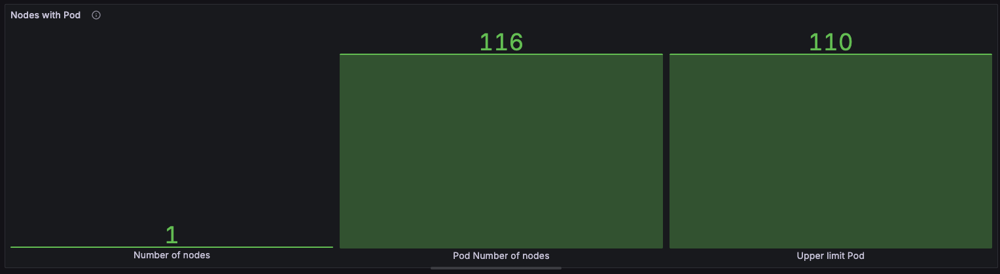
K8S NEW 대시보드 : Nodes with Pod 패널 # kubectl get pod -A | grep -v '1/1 Running' ... kubectl describe pod -n kube-burner-test-99 | grep Events: -A5 ... # kubectl describe node ... Capacity: cpu: 8 ephemeral-storage: 1055761844Ki hugepages-1Gi: 0 hugepages-2Mi: 0 hugepages-32Mi: 0 hugepages-64Ki: 0 memory: 12236104Ki pods: 110 Allocatable: cpu: 8 ephemeral-storage: 1055761844Ki hugepages-1Gi: 0 hugepages-2Mi: 0 hugepages-32Mi: 0 hugepages-64Ki: 0 memory: 12236104Ki pods: 110
- 해결
# maxPods 항목 없으면 기본값 110개 kubectl get cm -n kube-system kubelet-config -o yaml # docker exec -it myk8s-control-plane bash ---------------------------------------- cat /var/lib/kubelet/config.yaml apt update && apt install vim -y vim /var/lib/kubelet/config.yaml maxPods: 150 systemctl restart kubelet systemctl status kubelet exit ---------------------------------------- # kubectl describe node ... Capacity: cpu: 10 ephemeral-storage: 1055761844Ki hugepages-1Gi: 0 hugepages-2Mi: 0 hugepages-32Mi: 0 hugepages-64Ki: 0 memory: 12236104Ki pods: 150 Allocatable: cpu: 10 ephemeral-storage: 1055761844Ki hugepages-1Gi: 0 hugepages-2Mi: 0 hugepages-32Mi: 0 hugepages-64Ki: 0 memory: 12236104Ki pods: 150 # 아래 추가 : 해당 방법 실패 kubectl edit cm -n kube-system kubelet-config maxPods: 150kube-burner init -c s1-config-delete.yaml --log-level debug
kube-burner init -c s1-config.yaml --log-level debug
jobIterations:100, qps: 300, burst: 300objects.replicas: 1실행 → 모든 파드가 정상 배포됨!!
시나리오 3 : 노드 1대에 최대 파드(300개) 배포 시도 2
kube-burner init -c s1-config.yaml --log-level debug
jobIterations:300, qps: 300, burst: 300objects.replicas: 1변경 후 실행 → 모든 파드가 배포 되는지 확인
- 문제 원인 파악
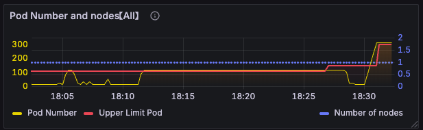
K8S NEW 대시보드 : Pod Number and nodes 패널 # kubectl get pod -A | grep -v '1/1 Running' ... # maxPods: 400 상향 docker exec -it myk8s-control-plane bash ---------------------------------------- cat /var/lib/kubelet/config.yaml apt update && apt install vim -y vim /var/lib/kubelet/config.yaml maxPods: 400 systemctl restart kubelet systemctl status kubelet exit ---------------------------------------- # pod ip range가 10.244.0.0/24이므로 255개의 pod까지만 배포가 가능함! -> 현재 jobIterations: 300으로 300개 pod는 배포 불가! # maxPods: 400이라도 ippool이 부족하여 수용이 불가능하다 kubectl describe pod -n kube-burner-test-250 | grep Events: -A5 Events: Type Reason Age From Message ---- ------ ---- ---- ------- Warning FailedScheduling 5m15s default-scheduler 0/1 nodes are available: 1 Too many pods. preemption: 0/1 nodes are available: 1 No preemption victims found for incoming pod. Normal Scheduled 4m51s default-scheduler Successfully assigned kube-burner-test-250/deployment-250-1-775b95b6b5-954kk to myk8s-control-plane Warning FailedCreatePodSandBox 4m38s kubelet Failed to create pod sandbox: rpc error: code = Unknown desc = failed to setup network for sandbox "f8b705fa3a0e185cb831de2d9ccd2fe3e7ced6eb9d81a4227d9433cbb4344711": plugin type="ptp" failed (add): ... failed to allocate for range 0: no IP addresses available in range set: 10.244.0.1-10.244.0.254 kubectl describe pod -n kube-burner-test-299 | grep Events: -A5 ... # kubectl describe node myk8s-control-plane | grep -i podcidr PodCIDR: 10.244.0.0/24kube-burner init -c s1-config-delete.yaml --log-level debug
- 소개 : Kubernetes performance and scale test orchestration framework written in golang :
- Cilium Performance 실습 환경 준비
- (추후 업데이트 예정) AWS EC2 기반 K8S 실습 환경 배포
- AWS EC2 Spec : m8g.8xlarge (vCPU 32, RAM 128GiB, NW BW 15Gbps) - Link → Ctrl 1대, Worker 2대
실습 환경 구성 (Type1) by kind k8s + Cilium CNI
# Prometheus Target connection refused bind-address 설정 : kube-controller-manager , kube-scheduler , etcd , kube-proxy kind create cluster --name myk8s --image kindest/node:v1.33.2 --config - <<EOF kind: Cluster apiVersion: kind.x-k8s.io/v1alpha4 nodes: - role: control-plane extraPortMappings: - containerPort: 30000 hostPort: 30000 - containerPort: 30001 hostPort: 30001 - containerPort: 30002 hostPort: 30002 - containerPort: 30003 hostPort: 30003 kubeadmConfigPatches: # Prometheus Target connection refused bind-address 설정 - | kind: ClusterConfiguration controllerManager: extraArgs: bind-address: 0.0.0.0 etcd: local: extraArgs: listen-metrics-urls: http://0.0.0.0:2381 scheduler: extraArgs: bind-address: 0.0.0.0 - | kind: KubeProxyConfiguration metricsBindAddress: 0.0.0.0 networking: disableDefaultCNI: true kubeProxyMode: none podSubnet: "10.244.0.0/16" # cluster-cidr kubeadmConfigPatches: - | kind: ClusterConfiguration controllerManager: extraArgs: allocate-node-cidrs: "true" cluster-cidr: "10.244.0.0/16" node-cidr-mask-size: "22" EOF # node 별 PodCIDR 확인 kubectl get nodes -o jsonpath='{.items[*].spec.podCIDR}' # cilium cni 설치 cilium install --version 1.18.1 --set ipam.mode=kubernetes --set ipv4NativeRoutingCIDR=172.20.0.0/16 \ --set routingMode=native --set autoDirectNodeRoutes=true --set endpointRoutes.enabled=true --set directRoutingSkipUnreachable=true \ --set kubeProxyReplacement=true --set bpf.masquerade=true \ --set endpointHealthChecking.enabled=false --set healthChecking=false \ --set hubble.enabled=true --set hubble.relay.enabled=true --set hubble.ui.enabled=true \ --set hubble.ui.service.type=NodePort --set hubble.ui.service.nodePort=30003 \ --set prometheus.enabled=true --set operator.prometheus.enabled=true --set envoy.prometheus.enabled=true --set hubble.metrics.enableOpenMetrics=true \ --set hubble.metrics.enabled="{dns,drop,tcp,flow,port-distribution,icmp,httpV2:exemplars=true;labelsContext=source_ip\,source_namespace\,source_workload\,destination_ip\,destination_namespace\,destination_workload\,traffic_direction}" \ --set debug.enabled=true # --dry-run-helm-values # hubble ui open http://127.0.0.1:30003 # metrics-server helm repo add metrics-server https://kubernetes-sigs.github.io/metrics-server/ helm upgrade --install metrics-server metrics-server/metrics-server --set 'args[0]=--kubelet-insecure-tls' -n kube-system # 확인 kubectl top node kubectl top pod -A --sort-by='cpu' kubectl top pod -A --sort-by='memory'- Install Prometheus & Grafana - Docs
# kubectl apply -f https://raw.githubusercontent.com/cilium/cilium/1.18.1/examples/kubernetes/addons/prometheus/monitoring-example.yaml # kubectl get deploy,pod,svc,ep -n cilium-monitoring kubectl get cm -n cilium-monitoring kc describe cm -n cilium-monitoring prometheus kc describe cm -n cilium-monitoring grafana-config kubectl get svc -n cilium-monitoring # NodePort 설정 kubectl patch svc -n cilium-monitoring prometheus -p '{"spec": {"type": "NodePort", "ports": [{"port": 9090, "targetPort": 9090, "nodePort": 30001}]}}' kubectl patch svc -n cilium-monitoring grafana -p '{"spec": {"type": "NodePort", "ports": [{"port": 3000, "targetPort": 3000, "nodePort": 30002}]}}' # 접속 주소 확인 open "http://127.0.0.1:30001" # prometheus open "http://127.0.0.1:30002" # grafana
실습 환경 구성 by kind k8s(contrlplane HA 3EA) + cilium cni# Prometheus Target connection refused bind-address 설정 : kube-controller-manager , kube-scheduler , etcd , kube-proxy kind create cluster --name myk8s --image kindest/node:v1.33.2 --config - <<EOF kind: Cluster apiVersion: kind.x-k8s.io/v1alpha4 nodes: - role: control-plane - role: control-plane - role: control-plane networking: apiServerAddress: "127.0.0.1" apiServerPort: 6443 disableDefaultCNI: true kubeProxyMode: none EOF # docker ps CONTAINER ID IMAGE COMMAND CREATED STATUS PORTS NAMES 3e0a95aff7a6 kindest/haproxy:v20230606-42a2262b "haproxy -W -db -f /…" 12 minutes ago Up 12 minutes 127.0.0.1:6443->6443/tcp myk8s-external-load-balancer 981cf7c18ac6 kindest/node:v1.33.2 "/usr/local/bin/entr…" 12 minutes ago Up 12 minutes 127.0.0.1:49776->6443/tcp myk8s-control-plane2 40b5b2ebe5bf kindest/node:v1.33.2 "/usr/local/bin/entr…" 12 minutes ago Up 12 minutes 127.0.0.1:49775->6443/tcp myk8s-control-plane 6aa3d5b5b1ab kindest/node:v1.33.2 "/usr/local/bin/entr…" 12 minutes ago Up 12 minutes 127.0.0.1:49777->6443/tcp myk8s-control-plane3 docker inspect myk8s-external-load-balancer | jq ... # host PC에서 127.0.0.1:6443 호출 시 HAProxy 컨테이너(myk8s-external-load-balancer)가 3대의 control-plancN 컨테이너로 요청을 분산 전달. docker logs myk8s-external-load-balancer ... [WARNING] 235/034452 (35) : kube-apiservers/myk8s-control-plane3 changed its IP from (none) to 172.18.0.2 by docker/dns. [WARNING] 235/034452 (35) : Server kube-apiservers/myk8s-control-plane3 ('myk8s-control-plane3') is UP/READY (resolves again). [WARNING] 235/034452 (35) : Server kube-apiservers/myk8s-control-plane3 administratively READY thanks to valid DNS answer. [WARNING] 235/034452 (35) : kube-apiservers/myk8s-control-plane changed its IP from (none) to 172.18.0.3 by docker/dns. [WARNING] 235/034452 (35) : Server kube-apiservers/myk8s-control-plane ('myk8s-control-plane') is UP/READY (resolves again). [WARNING] 235/034452 (35) : Server kube-apiservers/myk8s-control-plane administratively READY thanks to valid DNS answer. [WARNING] 235/034452 (35) : kube-apiservers/myk8s-control-plane2 changed its IP from (none) to 172.18.0.4 by docker/dns. [WARNING] 235/034452 (35) : Server kube-apiservers/myk8s-control-plane2 ('myk8s-control-plane2') is UP/READY (resolves again). ... [WARNING] 235/034502 (35) : Server kube-apiservers/myk8s-control-plane is UP, reason: Layer7 check passed, code: 200, check duration: 4ms. 1 active and 0 backup servers online. 0 sessions requeued, 0 total in queue. [WARNING] 235/034518 (35) : Server kube-apiservers/myk8s-control-plane2 is UP, reason: Layer7 check passed, code: 200, check duration: 2ms. 2 active and 0 backup servers online. 0 sessions requeued, 0 total in queue. [WARNING] 235/034527 (35) : Server kube-apiservers/myk8s-control-plane3 is UP, reason: Layer7 check passed, code: 200, check duration: 5ms. 3 active and 0 backup servers online. 0 sessions requeued, 0 total in queue. ... # kubectl cluster-info Kubernetes control plane is running at https://127.0.0.1:6443 CoreDNS is running at https://127.0.0.1:6443/api/v1/namespaces/kube-system/services/kube-dns:dns/proxy # cilium cni 설치해보기 cilium install --version 1.18.1 \ --set ipam.mode="cluster-pool" --set ipam.operator.clusterPoolIPv4PodCIDRList={"172.20.0.0/16"} --set ipv4NativeRoutingCIDR=172.20.0.0/16 \ --set routingMode=native --set autoDirectNodeRoutes=true --set endpointRoutes.enabled=true --set directRoutingSkipUnreachable=true \ --set kubeProxyReplacement=true --set bpf.masquerade=true \ --set endpointHealthChecking.enabled=false --set healthChecking=false \ --set hubble.enabled=true --set hubble.relay.enabled=true --set hubble.ui.enabled=true \ --set hubble.ui.service.type=NodePort --set hubble.ui.service.nodePort=30003 \ --set prometheus.enabled=true --set operator.prometheus.enabled=true --set hubble.metrics.enableOpenMetrics=true \ --set hubble.metrics.enabled="{dns,drop,tcp,flow,port-distribution,icmp,httpV2:exemplars=true;labelsContext=source_ip\,source_namespace\,source_workload\,destination_ip\,destination_namespace\,destination_workload\,traffic_direction}" \ --set debug.enabled=true # --dry-run-helm-values # Remove node taint kubectl taint nodes myk8s-control-plane node-role.kubernetes.io/control-plane- kubectl taint nodes myk8s-control-plane2 node-role.kubernetes.io/control-plane- kubectl taint nodes myk8s-control-plane3 node-role.kubernetes.io/control-plane- # kube-ops-view helm repo add geek-cookbook https://geek-cookbook.github.io/charts/ helm install kube-ops-view geek-cookbook/kube-ops-view --version 1.2.2 --set service.main.type=NodePort,service.main.ports.http.nodePort=30003 --set env.TZ="Asia/Seoul" --namespace kube-system open "http://localhost:30003/#scale=1.5" open "http://localhost:30003/#scale=2" # metrics-server helm repo add metrics-server https://kubernetes-sigs.github.io/metrics-server/ helm upgrade --install metrics-server metrics-server/metrics-server --set 'args[0]=--kubelet-insecure-tls' -n kube-system # 확인 kubectl top node kubectl top pod -A --sort-by='cpu' kubectl top pod -A --sort-by='memory'
[2주차] Cilium Metrics 대시보드 & 간단 쿼리문 알아보기! : Generic, API, Cilium(BPF, kvstore, NW info, Endpoints, k8s integration)
- map ops (average node) 패널 분석
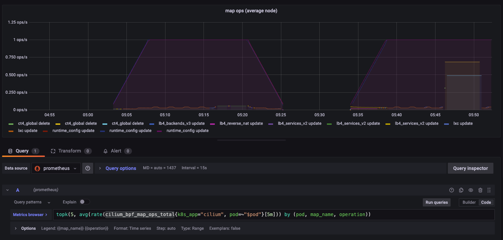
- 아래 쿼리문 이해해보자!
topk(5, avg(rate(cilium_bpf_map_ops_total{k8s_app="cilium", pod=~"$pod"}[5m])) by (pod, map_name, operation))
- 프로메테우스에서 쿼리 해보면서 이해하기 - Docs
- cilium_bpf_map_ops_total : Number of eBPF map operations performed. ⇒ 수행된 eBPF Map 작업 수
mapNameis deprecated and will be removed in 1.10. Usemap_nameinstead.
# cilium_bpf_map_ops_total cilium_bpf_map_ops_total{k8s_app="cilium"} cilium_bpf_map_ops_total{k8s_app="cilium", pod="cilium-4hghz"} # 최근 5분 간의 데이터로 증가율 계산 rate(cilium_bpf_map_ops_total{k8s_app="cilium"}[5m]) # Graph 확인 # 여러 시계열(metric series)의 값의 평균 avg(rate(cilium_bpf_map_ops_total{k8s_app="cilium"}[5m])) # 집계 함수(예: sum, avg, max, rate)와 함께 사용하여 어떤 레이블(label)을 기준으로 그룹화할지를 지정하는 그룹핑(grouping) avg(rate(cilium_bpf_map_ops_total{k8s_app="cilium"}[5m])) by (pod) avg(rate(cilium_bpf_map_ops_total{k8s_app="cilium"}[5m])) by (pod, map_name) avg(rate(cilium_bpf_map_ops_total{k8s_app="cilium"}[5m])) by (pod, map_name, operation) # Graph 확인 # 시계열 중에서 가장 큰 k개를 선택 topk(5, avg(rate(cilium_bpf_map_ops_total{k8s_app="cilium"}[5m]))) by (pod, map_name, operation) topk(5, avg(rate(cilium_bpf_map_ops_total{k8s_app="cilium", pod=~"$pod"}[5m]))) by (pod, map_name, operation) - cilium_bpf_map_ops_total : Number of eBPF map operations performed. ⇒ 수행된 eBPF Map 작업 수
- 그라파나 해당 대시보드 편집 → Variables
- pod=~"
$pod" 변수 사용
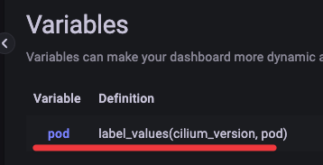
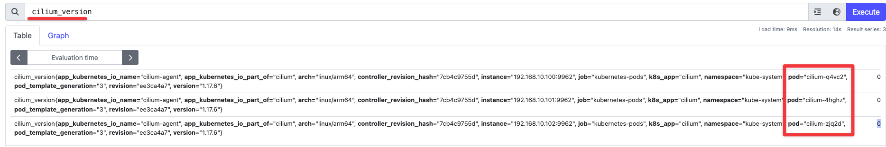
- pod=~"
- map ops (average node) 패널 분석
쿠버네티스 환경에서 속도 측정 테스트
- 배포 및 확인
# 배포 cat <<EOF | kubectl apply -f - apiVersion: apps/v1 kind: Deployment metadata: name: iperf3-server spec: selector: matchLabels: app: iperf3-server replicas: 1 template: metadata: labels: app: iperf3-server spec: containers: - name: iperf3-server image: networkstatic/iperf3 args: ["-s"] ports: - containerPort: 5201 --- apiVersion: v1 kind: Service metadata: name: iperf3-server spec: selector: app: iperf3-server ports: - name: tcp-service protocol: TCP port: 5201 targetPort: 5201 - name: udp-service protocol: UDP port: 5201 targetPort: 5201 type: ClusterIP --- apiVersion: apps/v1 kind: Deployment metadata: name: iperf3-client spec: selector: matchLabels: app: iperf3-client replicas: 1 template: metadata: labels: app: iperf3-client spec: containers: - name: iperf3-client image: networkstatic/iperf3 command: ["sleep"] args: ["infinity"] EOF # 확인 : 서버와 클라이언트가 어떤 노드에 배포되었는지 확인 kubectl get deploy,svc,pod -owide # 서버 파드 로그 확인 : 기본 5201 포트 Listen kubectl logs -l app=iperf3-server -f
- TCP 5201, 측정시간 5초
# 클라이언트 파드에서 아래 명령 실행 kubectl exec -it deploy/iperf3-client -- iperf3 -c iperf3-server -t 5 Connecting to host iperf3-server, port 5201 [ 5] local 10.244.3.245 port 56902 connected to 10.96.212.213 port 5201 [ ID] Interval Transfer Bitrate Retr Cwnd [ 5] 0.00-1.00 sec 19.6 GBytes 169 Gbits/sec 0 2.25 MBytes [ 5] 1.00-2.00 sec 19.5 GBytes 167 Gbits/sec 4 2.50 MBytes [ 5] 2.00-3.00 sec 18.8 GBytes 162 Gbits/sec 0 2.50 MBytes [ 5] 3.00-4.00 sec 19.2 GBytes 165 Gbits/sec 0 2.50 MBytes [ 5] 4.00-5.00 sec 19.5 GBytes 168 Gbits/sec 0 2.50 MBytes - - - - - - - - - - - - - - - - - - - - - - - - - [ ID] Interval Transfer Bitrate Retr [ 5] 0.00-5.00 sec 96.7 GBytes 166 Gbits/sec 4 sender [ 5] 0.00-5.00 sec 96.7 GBytes 166 Gbits/sec receiver iperf Done. # 서버 파드 로그 확인 : 기본 5201 포트 Listen kubectl logs -l app=iperf3-server -f- iperf test 설명
iperf3는 네트워크 성능을 측정하기 위한 도구로, 클라이언트와 서버 간의 대역폭, 지연 시간, 패킷 손실 등을 테스트하는 데 사용됩니다.
사용한 명령어 iperf3 -c iperf3-server -t 5 는 다음과 같은 의미를 가집니다.
- c iperf3-server: 클라이언트 모드로 실행하며, iperf3-server라는 호스트(서버)에 연결합니다. 서버는 iperf3가 실행 중이어야 하며, 기본 포트 5201을 사용합니다.
- t 5: 테스트를 5초 동안 실행하도록 설정합니다.
- 기본적으로 이 명령은 클라이언트에서 서버로 데이터를 전송하는 테스트를 수행하며, TCP 프로토콜을 사용합니다(다른 옵션이 지정되지 않았으므로).
- Transfer VS Bitrate
- Bitrate: 네트워크를 통해 특정 시간 간격(Interval) 동안 전송된 데이터의 속도를 나타냅니다. 단위는 보통 Gbits/sec(기가비트/초) 또는 Mbits/sec(메가비트/초)로 표시되며, 이는 네트워크의 대역폭, 즉 초당 전송할 수 있는 데이터의 양을 의미합니다. 예를 들어, 결과에서 [SUM] 0.00-1.00 sec 19.8 GBytes 170 Gbits/sec는 해당 1초 동안 약 170Gbps의 대역폭으로 데이터를 전송했음을 나타냅니다.
- Transfer: 같은 시간 간격 동안 실제로 전송된 데이터의 총량을 의미합니다. 단위는 GBytes(기가바이트) 또는 MBytes(메가바이트)로 표시됩니다. 예를 들어, 같은 구간에서 19.8 GBytes는 1초 동안 전송된 데이터의 크기를 나타냅니다.
- 테스트 결과 분석
테스트 결과는 클라이언트가 서버(iperf3-server, IP: 10.96.212.213, 포트 5201`)에 연결하여 5초 동안 데이터를 전송한 결과를 보여줍니다.
- 연결 정보
Connecting to host iperf3-server, port 5201 [ 5] local 10.244.3.245 port 56902 connected to 10.96.212.213 port 5201- 클라이언트의 로컬 IP는 10.244.3.245이고, 임의의 포트(56902)를 사용하여 서버 IP 10.96.212.213의 포트 5201에 연결했습니다.
- 이는 테스트가 성공적으로 시작되었음을 나타냅니다.
- 테스트 결과 테이블
[ ID] Interval Transfer Bitrate Retr Cwnd [ 5] 0.00-1.00 sec 19.6 GBytes 169 Gbits/sec 0 2.25 MBytes [ 5] 1.00-2.00 sec 19.5 GBytes 167 Gbits/sec 4 2.50 MBytes [ 5] 2.00-3.00 sec 18.8 GBytes 162 Gbits/sec 0 2.50 MBytes [ 5] 3.00-4.00 sec 19.2 GBytes 165 Gbits/sec 0 2.50 MBytes [ 5] 4.00-5.00 sec 19.5 GBytes 168 Gbits/sec 0 2.50 MBytes- [ID]: TCP 연결의 식별자(여기서는 5)입니다. 여러 병렬 연결을 사용할 경우 각 연결에 고유한 ID가 부여됩니다.
- Interval: 각 시간 구간(1초 단위)별로 결과를 보여줍니다. 테스트는 5초 동안 실행되었으므로 1초 간격으로 5개의 구간이 나옵니다.
- Transfer: 해당 구간 동안 전송된 데이터의 양입니다. 예: 첫 번째 구간(0.00-1.00초)에서 19.6GB가 전송되었습니다.
- Bitrate: 해당 구간에서의 데이터 전송 속도입니다. 예: 첫 번째 구간에서는 169Gbps(기가비트/초)로 전송되었습니다.
- Retr: 재전송(Retry)된 패킷 수입니다. TCP는 패킷 손실 시 재전송을 시도하는데, 두 번째 구간에서 4번의 재전송이 발생했습니다. 나머지 구간에서는 재전송이 없었습니다.
- Cwnd: TCP 혼잡 윈도우(Congestion Window) 크기입니다. 이는 네트워크 혼잡 상태를 조절하기 위해 TCP가 사용하는 버퍼 크기로, 여기서는 약 2.25~2.50MB로 유지되었습니다.
- 요약 결과
- - - - - - - - - - - - - - - - - - - - - - - - - [ ID] Interval Transfer Bitrate Retr [ 5] 0.00-5.00 sec 96.7 GBytes 166 Gbits/sec 4 sender [ 5] 0.00-5.00 sec 96.7 GBytes 166 Gbits/sec receiver- Sender: 클라이언트 측에서 5초 동안 총 96.7GB를 전송했으며, 평균 전송 속도는 166Gbps였습니다. 총 4번의 재전송이 있었습니다.
- Receiver: 서버 측에서도 동일하게 96.7GB를 수신했으며, 평균 전송 속도는 166Gbps로 동일합니다. 이는 데이터 손실이 없었음을 나타냅니다.
- 연결 정보
- iperf test 설명
- UDP 사용, 역방향 모드(-R)
# 클라이언트 파드에서 아래 명령 실행 kubectl exec -it deploy/iperf3-client -- iperf3 -c iperf3-server -u -b 20G Connecting to host iperf3-server, port 5201 [ 5] local 10.244.3.245 port 52592 connected to 10.96.212.213 port 5201 [ ID] Interval Transfer Bitrate Total Datagrams [ 5] 0.00-1.00 sec 2.32 GBytes 20.0 Gbits/sec 76162 [ 5] 1.00-2.00 sec 2.33 GBytes 20.0 Gbits/sec 76366 [ 5] 2.00-3.00 sec 2.33 GBytes 20.0 Gbits/sec 76328 [ 5] 3.00-4.00 sec 2.33 GBytes 20.0 Gbits/sec 76318 [ 5] 4.00-5.00 sec 2.33 GBytes 20.0 Gbits/sec 76278 [ 5] 5.00-6.00 sec 2.33 GBytes 20.0 Gbits/sec 76265 [ 5] 6.00-7.00 sec 2.33 GBytes 20.0 Gbits/sec 76276 [ 5] 7.00-8.00 sec 2.33 GBytes 20.0 Gbits/sec 76309 [ 5] 8.00-9.00 sec 2.33 GBytes 20.0 Gbits/sec 76295 [ 5] 9.00-10.00 sec 2.33 GBytes 20.0 Gbits/sec 76342 - - - - - - - - - - - - - - - - - - - - - - - - - [ ID] Interval Transfer Bitrate Jitter Lost/Total Datagrams [ 5] 0.00-10.00 sec 23.3 GBytes 20.0 Gbits/sec 0.000 ms 0/762939 (0%) sender [ 5] 0.00-10.00 sec 22.9 GBytes 19.7 Gbits/sec 0.003 ms 12520/762938 (1.6%) receiver iperf Done. # 서버 파드 로그 확인 : 기본 5201 포트 Listen kubectl logs -l app=iperf3-server -f- iperf test 설명
kubectl exec -it deploy/iperf3-client -- iperf3 -c iperf3-server -u -b 20G- kubectl exec -it deploy/iperf3-client --: Kubernetes 클러스터에서 iperf3-client라는 이름의 Deployment에 속한 파드(pod)에서 명령을 실행합니다. -it 플래그는 대화형 터미널을 열어 명령을 실행하도록 합니다.
- iperf3 -c iperf3-server: iperf3를 클라이언트 모드로 실행하여 iperf3-server라는 호스트(서버, IP: 10.96.212.213, 포트 5201)에 연결합니다.
- u: UDP 프로토콜을 사용하여 테스트를 수행합니다(기본값은 TCP). UDP는 TCP와 달리 연결 지향적이지 않아 패킷 손실, 지터(Jitter) 등을 측정하는 데 유용합니다.
- b 20G: 전송 대역폭을 20Gbps(기가비트/초)로 제한합니다. 즉, 클라이언트가 초당 20Gbps의 속도로 데이터를 전송하도록 설정합니다.
- 기본 테스트 시간: -t 옵션이 지정되지 않았으므로, iperf3의 기본값인 10초 동안 테스트가 진행됩니다.
- 테스트 결과 분석
스트 결과는 클라이언트가 서버(iperf3-server, IP: 10.96.212.213, 포트 5201`)로 UDP 프로토콜을 사용하여 10초 동안 데이터를 전송한 결과를 보여줍니다.
- 연결정보
Connecting to host iperf3-server, port 5201 [ 5] local 10.244.3.245 port 52592 connected to 10.96.212.213 port 5201클라이언트의 로컬 IP는 10.244.3.245이고, 임의의 포트(52592)를 사용하여 서버 IP 10.96.212.213의 포트 5201에 연결했습니다.
- 테스트 결과 테이블
[ ID] Interval Transfer Bitrate Total Datagrams [ 5] 0.00-1.00 sec 2.32 GBytes 20.0 Gbits/sec 76162 [ 5] 1.00-2.00 sec 2.33 GBytes 20.0 Gbits/sec 76366 [ 5] 2.00-3.00 sec 2.33 GBytes 20.0 Gbits/sec 76328 [ 5] 3.00-4.00 sec 2.33 GBytes 20.0 Gbits/sec 76318 [ 5] 4.00-5.00 sec 2.33 GBytes 20.0 Gbits/sec 76278 [ 5] 5.00-6.00 sec 2.33 GBytes 20.0 Gbits/sec 76265 [ 5] 6.00-7.00 sec 2.33 GBytes 20.0 Gbits/sec 76276 [ 5] 7.00-8.00 sec 2.33 GBytes 20.0 Gbits/sec 76309 [ 5] 8.00-9.00 sec 2.33 GBytes 20.0 Gbits/sec 76295 [ 5] 9.00-10.00 sec 2.33 GBytes 20.0 Gbits/sec 76342- [ID]: UDP 스트림의 식별자(여기서는 5)입니다.
- Interval: 1초 간격으로 10초 동안의 테스트 결과를 보여줍니다.
- Transfer: 각 구간 동안 전송된 데이터의 양입니다. 약 2.32~2.33GB가 1초마다 전송되었습니다.
- Bitrate: 각 구간의 전송 속도로, 모두 20.0Gbps로 일정합니다. 이는 -b 20G로 설정한 대역폭 제한에 따라 정확히 20Gbps로 유지되었음을 보여줍니다.
- Total Datagrams: 각 구간에서 전송된 UDP 데이터그램(패킷)의 수입니다. 약 76,162~76,366개의 데이터그램이 전송되었습니다.
- 요약 결과
- - - - - - - - - - - - - - - - - - - - - - - - - [ ID] Interval Transfer Bitrate Jitter Lost/Total Datagrams [ 5] 0.00-10.00 sec 23.3 GBytes 20.0 Gbits/sec 0.000 ms 0/762939 (0%) sender [ 5] 0.00-10.00 sec 22.9 GBytes 19.7 Gbits/sec 0.003 ms 12520/762938 (1.6%) receiver- Sender: 클라이언트 측에서 10초 동안 총 23.3GB를 전송했으며, 평균 전송 속도는 20.0Gbps였습니다. 전송된 총 데이터그램 수는 762,939개이며, 손실된 데이터그램은 0개(0%)로 보고되었습니다.
- Receiver: 서버 측에서는 22.9GB를 수신했으며, 평균 전송 속도는 19.7Gbps로 약간 낮습니다. 총 762,938개의 데이터그램 중 12,520개(1.6%)가 손실되었습니다.
- Jitter: 지터는 패킷 도착 시간의 변동성을 나타냅니다. 수신 측에서 평균 지터는 0.003ms로 매우 낮아 네트워크가 안정적임을 보여줍니다.
- 최종 요약
- 대역폭 일정성: 클라이언트는 설정한 대로 정확히 20Gbps로 데이터를 전송했으며, 각 구간에서 전송 속도가 일정했습니다. 이는 네트워크가 지정된 대역폭을 안정적으로 처리할 수 있음을 보여줍니다.
- 패킷 손실: 수신 측에서 1.6%(12,520/762,938)의 데이터그램 손실이 발생했습니다. UDP는 TCP와 달리 재전송 메커니즘이 없으므로, 이 손실은 네트워크 혼잡, 버퍼 오버플로우, 또는 네트워크 경로의 제약으로 인해 발생했을 가능성이 있습니다.
- 낮은 지터: 평균 지터가 0.003ms로 매우 낮아, 네트워크가 실시간 애플리케이션(예: VoIP, 스트리밍)에 적합할 정도로 안정적임을 나타냅니다.
- 성능 비교: 이전 테스트(TCP, 166Gbps)와 비교하면, 이번 UDP 테스트는 대역폭이 20Gbps로 제한되었으므로 낮은 성능을 보입니다. 이는 -b 20G 옵션 때문이며, 네트워크의 최대 용량을 테스트하려면 -b 값을 더 높이거나 제거해야 합니다.
- 연결정보
- iperf test 설명
- TCP, 쌍방향 모드(-R)
# 클라이언트 파드에서 아래 명령 실행 kubectl exec -it deploy/iperf3-client -- iperf3 -c iperf3-server -t 5 --bidir ... Connecting to host iperf3-server, port 5201 [ 5] local 10.244.3.245 port 55080 connected to 10.96.212.213 port 5201 [ 7] local 10.244.3.245 port 55088 connected to 10.96.212.213 port 5201 [ ID][Role] Interval Transfer Bitrate Retr Cwnd [ 5][TX-C] 0.00-1.00 sec 17.6 GBytes 152 Gbits/sec 1 3.75 MBytes [ 7][RX-C] 0.00-1.00 sec 1.77 GBytes 15.2 Gbits/sec [ 5][TX-C] 1.00-2.00 sec 1.90 GBytes 16.4 Gbits/sec 0 3.75 MBytes [ 7][RX-C] 1.00-2.00 sec 18.3 GBytes 157 Gbits/sec [ 5][TX-C] 2.00-3.00 sec 1.86 GBytes 15.9 Gbits/sec 0 3.75 MBytes [ 7][RX-C] 2.00-3.00 sec 18.6 GBytes 160 Gbits/sec [ 5][TX-C] 3.00-4.00 sec 12.2 GBytes 105 Gbits/sec 0 3.75 MBytes [ 7][RX-C] 3.00-4.00 sec 7.61 GBytes 65.4 Gbits/sec [ 5][TX-C] 4.00-5.00 sec 17.8 GBytes 153 Gbits/sec 0 3.75 MBytes [ 7][RX-C] 4.00-5.00 sec 1.78 GBytes 15.3 Gbits/sec - - - - - - - - - - - - - - - - - - - - - - - - - [ ID][Role] Interval Transfer Bitrate Retr [ 5][TX-C] 0.00-5.00 sec 51.4 GBytes 88.3 Gbits/sec 1 sender [ 5][TX-C] 0.00-5.00 sec 51.4 GBytes 88.3 Gbits/sec receiver [ 7][RX-C] 0.00-5.00 sec 48.0 GBytes 82.5 Gbits/sec 3 sender [ 7][RX-C] 0.00-5.00 sec 48.0 GBytes 82.5 Gbits/sec receiver iperf Done. >> Client→Server (TX): 51.4 Gbps >> Server→Client (RX): 48.0 Gbps >> Retransmit : TX=1, RX=3 → 일부 패킷 손실로 인한 재전송이 있었음 >> 전체적으로는 48~52Gbps 수준의 대역폭이 측정됨 # 서버 파드 로그 확인 : 기본 5201 포트 Listen kubectl logs -l app=iperf3-server -f- iperf test 설명
kubectl exec -it deploy/iperf3-client -- iperf3 -c iperf3-server -t 5 --bidir
- kubectl exec -it deploy/iperf3-client --: Kubernetes 클러스터에서 iperf3-client라는 이름의 Deployment에 속한 파드(pod)에서 명령을 실행합니다. -it 플래그는 대화형 터미널을 열어 명령을 실행하도록 합니다.
- iperf3 -c iperf3-server: iperf3를 클라이언트 모드로 실행하여 iperf3-server라는 호스트(서버, IP: 10.96.212.213, 포트 5201)에 연결합니다.
- t 5: 테스트를 5초 동안 실행하도록 설정합니다.
- -bidir: 양방향(bidirectional) 테스트를 수행합니다. 즉, 클라이언트에서 서버로 데이터 전송(TX)과 서버에서 클라이언트로 데이터 전송(RX)을 동시에 측정합니다.
- 기본 프로토콜: 별도로 -u 옵션이 지정되지 않았으므로 TCP 프로토콜을 사용합니다.
- 테스트 결과 분석
테스트 결과는 클라이언트가 서버(iperf3-server, IP: 10.96.212.213, 포트 5201)와 양방향 TCP 데이터 전송을 수행한 결과를 보여줍니다. [TX-C]는 클라이언트에서 서버로의 전송(송신), [RX-C]는 서버에서 클라이언트로의 전송(수신)을 의미합니다.
- 연결 정보
Connecting to host iperf3-server, port 5201 [ 5] local 10.244.3.245 port 55080 connected to 10.96.212.213 port 5201 [ 7] local 10.244.3.245 port 55088 connected to 10.96.212.213 port 5201- 클라이언트의 로컬 IP는 10.244.3.245이며, 두 개의 TCP 연결이 사용되었습니다:
- [ 5] (포트 55080): 클라이언트에서 서버로 데이터 전송(TX-C).
- [ 7] (포트 55088): 서버에서 클라이언트로 데이터 전송(RX-C).
- 이는 양방향 테스트(--bidir)로 인해 두 개의 TCP 스트림이 설정되었음을 나타냅니다.
- 클라이언트의 로컬 IP는 10.244.3.245이며, 두 개의 TCP 연결이 사용되었습니다:
- 테스트 결과 테이블
[ ID][Role] Interval Transfer Bitrate Retr Cwnd [ 5][TX-C] 0.00-1.00 sec 17.6 GBytes 152 Gbits/sec 1 3.75 MBytes [ 7][RX-C] 0.00-1.00 sec 1.77 GBytes 15.2 Gbits/sec [ 5][TX-C] 1.00-2.00 sec 1.90 GBytes 16.4 Gbits/sec 0 3.75 MBytes [ 7][RX-C] 1.00-2.00 sec 18.3 GBytes 157 Gbits/sec [ 5][TX-C] 2.00-3.00 sec 1.86 GBytes 15.9 Gbits/sec 0 3.75 MBytes [ 7][RX-C] 2.00-3.00 sec 18.6 GBytes 160 Gbits/sec [ 5][TX-C] 3.00-4.00 sec 12.2 GBytes 105 Gbits/sec 0 3.75 MBytes [ 7][RX-C] 3.00-4.00 sec 7.61 GBytes 65.4 Gbits/sec [ 5][TX-C] 4.00-5.00 sec 17.8 GBytes 153 Gbits/sec 0 3.75 MBytes [ 7][RX-C] 4.00-5.00 sec 1.78 GBytes 15.3 Gbits/sec- [ID][Role]: TCP 연결의 식별자와 역할. [ 5][TX-C]는 클라이언트에서 서버로의 전송, [ 7][RX-C]는 서버에서 클라이언트로의 전송입니다.
- Interval: 1초 간격으로 5초 동안의 테스트 결과를 보여줍니다.
- Transfer: 각 구간 동안 전송된 데이터의 양.
- [TX-C]: 클라이언트 → 서버 전송은 1.86~17.8GB로 구간마다 변동이 큽니다.
- [RX-C]: 서버 → 클라이언트 전송은 1.77~18.6GB로 역시 변동이 큽니다.
- Bitrate: 각 구간의 데이터 전송 속도.
- [TX-C]: 15.9~153Gbps로 변동이 큽니다.
- [RX-C]: 15.2~160Gbps로 변동이 큽니다.
- Retr: 재전송(Retry)된 패킷 수. [TX-C]에서 첫 번째 구간에서 1번의 재전송이 있었고, [RX-C]에서는 3번의 재전송이 있었습니다(요약 참조).
- Cwnd: TCP 혼잡 윈도우(Congestion Window) 크기. [TX-C]에서 3.75MB로 일정하게 유지되었습니다. [RX-C]는 UDP와 달리 혼잡 윈도우가 표시되지 않습니다(서버 측에서는 클라이언트가 이를 보고하지 않음).
- 요약 결과
- - - - - - - - - - - - - - - - - - - - - - - - - [ ID][Role] Interval Transfer Bitrate Retr [ 5][TX-C] 0.00-5.00 sec 51.4 GBytes 88.3 Gbits/sec 1 sender [ 5][TX-C] 0.00-5.00 sec 51.4 GBytes 88.3 Gbits/sec receiver [ 7][RX-C] 0.00-5.00 sec 48.0 GBytes 82.5 Gbits/sec 3 sender [ 7][RX-C] 0.00-5.00 sec 48.0 GBytes 82.5 Gbits/sec receiver- [TX-C] (클라이언트 → 서버): 5초 동안 총 51.4GB 전송, 평균 88.3Gbps, 재전송 1회.
- [RX-C] (서버 → 클라이언트): 5초 동안 총 48.0GB 수신, 평균 82.5Gbps, 재전송 3회.
- 송신과 수신 모두에서 데이터 손실 없이 전송이 완료되었습니다(송신/수신 데이터량 일치).
- 최종 요약
- 양방향 테스트: --bidir 옵션으로 인해 클라이언트와 서버가 동시에 데이터를 주고받았습니다. 이는 실제 애플리케이션에서 양방향 통신이 필요한 경우(예: 비디오 스트리밍, 양방향 데이터 교환)를 시뮬레이션합니다.
- 성능 변동: 두 방향 모두에서 대역폭이 구간별로 크게 변동(15.2~160Gbps)했습니다. 이는 네트워크 혼잡, 리소스 경쟁, 또는 Kubernetes 클러스터의 네트워크 오버레이(CNI)로 인한 오버헤드가 원인일 수 있습니다.
- 대역폭 차이: 클라이언트 → 서버(88.3Gbps)가 서버 → 클라이언트(82.5Gbps)보다 약간 높은 성능을 보였습니다. 이는 클라이언트와 서버의 하드웨어 성능 차이, 네트워크 경로 비대칭, 또는 트래픽 우선순위 설정 때문일 수 있습니다.
- 낮은 재전송 횟수: 총 4회의 재전송(TX-C: 1, RX-C: 3)은 안정적인 네트워크를 나타냅니다. 이전 TCP 테스트(166Gbps, 재전송 4회)와 비교하면 대역폭은 낮아졌지만, 양방향 테스트로 인해 네트워크 부하가 증가했을 가능성이 있습니다.
- 비교: 이전 TCP 테스트(166Gbps, 단방향)와 비교하면 양방향 테스트는 평균 대역폭이 낮습니다(88.3Gbps, 82.5Gbps). 이는 양방향 전송이 네트워크 리소스를 더 많이 사용하기 때문입니다.
- 연결 정보
- iperf test 설명
- TCP 다중 스트림(30개), -P(number of parallel client streams to run)
# 클라이언트 파드에서 아래 명령 실행 kubectl exec -it deploy/iperf3-client -- iperf3 -c iperf3-server -t 10 -P 2 # 서버 파드 로그 확인 : 기본 5201 포트 Listen kubectl logs -l app=iperf3-server -f- iperf test 설명
kubectl exec -it deploy/iperf3-client -- iperf3 -c iperf3-server -t 10 -P 2
- kubectl exec -it deploy/iperf3-client --: Kubernetes 클러스터에서 iperf3-client라는 이름의 Deployment에 속한 파드(pod)에서 명령을 실행합니다. -it 플래그는 대화형 터미널을 열어 명령을 실행하도록 합니다.
- iperf3 -c iperf3-server: iperf3를 클라이언트 모드로 실행하여 iperf3-server라는 호스트(서버, IP: 10.96.212.213, 포트 5201)에 연결합니다.
- t 10: 테스트를 10초 동안 실행하도록 설정합니다.
- P 2: 2개의 병렬 TCP 스트림을 사용하여 테스트를 수행합니다. 이는 클라이언트가 서버로 동시에 두 개의 TCP 연결을 통해 데이터를 전송하도록 합니다.
- 기본 프로토콜: -u 옵션이 지정되지 않았으므로 TCP 프로토콜을 사용합니다.
- 테스트 결과 분석
테스트 결과는 클라이언트가 서버(iperf3-server, IP: 10.96.212.213, 포트 5201)로 2개의 병렬 TCP 스트림을 사용하여 10초 동안 데이터를 전송한 결과를 보여줍니다
- 연결 정보
Connecting to host iperf3-server, port 5201 [ 5] local 10.244.3.245 port 45426 connected to 10.96.212.213 port 5201 [ 7] local 10.244.3.245 port 45442 connected to 10.96.212.213 port 5201- 클라이언트의 로컬 IP는 10.244.3.245이며, 두 개의 TCP 연결이 사용되었습니다:
- [ 5] (포트 45426): 첫 번째 TCP 스트림.
- [ 7] (포트 45442): 두 번째 TCP 스트림.
- 이는 -P 2 옵션으로 인해 두 개의 병렬 TCP 스트림이 설정되었음을 나타냅니다.
- 클라이언트의 로컬 IP는 10.244.3.245이며, 두 개의 TCP 연결이 사용되었습니다:
- 테스트 결과 테이블
[ ID] Interval Transfer Bitrate Retr Cwnd [ 5] 0.00-1.00 sec 9.90 GBytes 85.0 Gbits/sec 1 1.37 MBytes [ 7] 0.00-1.00 sec 9.90 GBytes 85.0 Gbits/sec 7 1023 KBytes [SUM] 0.00-1.00 sec 19.8 GBytes 170 Gbits/sec 8 ... [ 5] 9.00-10.00 sec 9.57 GBytes 82.2 Gbits/sec 0 1.37 MBytes [ 7] 9.00-10.00 sec 9.57 GBytes 82.2 Gbits/sec 1 1.44 MBytes [SUM] 9.00-10.00 sec 19.1 GBytes 164 Gbits/sec 1- [ID]: 각 TCP 스트림의 식별자. [ 5]와 [ 7]은 각각 두 개의 병렬 스트림을 나타냅니다. [SUM]은 두 스트림의 합계를 보여줍니다.
- Interval: 1초 간격으로 10초 동안의 테스트 결과를 보여줍니다.
- Transfer: 각 구간 동안 전송된 데이터의 양.
- 각 스트림([ 5], [ 7])은 약 9.17~9.90GB를 1초마다 전송했습니다.
- [SUM]은 두 스트림의 합계로, 약 18.3~19.8GB가 전송되었습니다.
- Bitrate: 각 구간의 데이터 전송 속도.
- 각 스트림은 약 78.8~85.0Gbps를 기록했습니다.
- [SUM]은 두 스트림의 총 대역폭으로, 158~170Gbps를 기록했습니다.
- Retr: 재전송(Retry)된 패킷 수. 각 스트림에서 재전송 횟수는 구간별로 0~18회로 변동이 있으며, 특히 3~5초 구간에서 재전송이 많았습니다(합계 30, 29).
- Cwnd: TCP 혼잡 윈도우(Congestion Window) 크기. [ 5]는 약 1.37MB, [ 7]은 약 1.02~1.44MB로 유지되었습니다.
- 요약 결과
[ ID] Interval Transfer Bitrate Retr [ 5] 0.00-10.00 sec 95.6 GBytes 82.2 Gbits/sec 31 sender [ 5] 0.00-10.00 sec 95.6 GBytes 82.2 Gbits/sec receiver [ 7] 0.00-10.00 sec 95.6 GBytes 82.2 Gbits/sec 59 sender [ 7] 0.00-10.00 sec 95.6 GBytes 82.2 Gbits/sec receiver [SUM] 0.00-10.00 sec 191 GBytes 164 Gbits/sec 90 sender [SUM] 0.00-10.00 sec 191 GBytes 164 Gbits/sec receiver- 각 스트림([ 5], [ 7]): 10초 동안 각각 95.6GB를 전송했으며, 평균 대역폭은 82.2Gbps였습니다. 재전송은 [ 5]에서 31회, [ 7]에서 59회 발생했습니다.
- 합계([SUM]): 두 스트림을 합쳐 191GB를 전송했으며, 평균 대역폭은 164Gbps였습니다. 총 재전송 횟수는 90회입니다.
- 송신과 수신 데이터량이 동일하여 데이터 손실 없이 전송이 완료되었습니다.
- 이 차트를 통해 총 대역폭이 158~170Gbps로 유지되었으나, 3~5초 구간에서 약간의 하락이 있었음을 확인할 수 있습니다. 이는 재전송이 많았던 구간과 일치합니다.
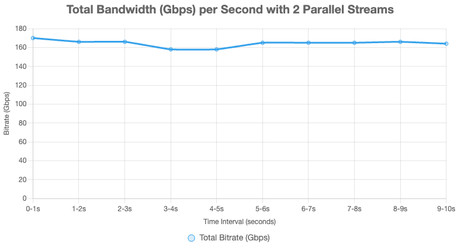
- 최종 요약
- 병렬 스트림의 효과: -P 2로 두 개의 TCP 스트림을 사용한 결과, 총 대역폭은 164Gbps로, 이전 단일 스트림 TCP 테스트(166Gbps)와 유사합니다. 이는 네트워크가 병렬 스트림을 처리할 수 있는 용량이 충분함을 보여줍니다.
- 재전송 횟수: 총 90회의 재전송은 이전 단일 스트림 테스트(4회)보다 많습니다. 이는 병렬 스트림이 네트워크에 더 많은 부하를 주었거나, TCP 혼잡 제어로 인해 재전송이 증가했을 가능성을 나타냅니다. 특히 3~5초 구간에서 재전송이 집중되었습니다(30, 29회).
- 대역폭 안정성: 각 스트림의 대역폭은 약 78.8~85.0Gbps로 비교적 안정적이며, 합계는 158~170Gbps로 일정했습니다. 이는 네트워크가 병렬 연결을 안정적으로 처리했음을 보여줍니다.
- 비교:
- 단일 스트림 TCP 테스트(166Gbps, 5초, 재전송 4회): 단일 스트림은 재전송이 적었지만, 대역폭은 이번 테스트와 비슷했습니다.
- UDP 테스트(20Gbps, 10초, 패킷 손실 1.6%): UDP는 대역폭이 제한되었으므로 비교가 어렵지만, 손실률이 존재했던 것과 달리 TCP는 손실이 없었습니다.
- 양방향 TCP 테스트(88.3Gbps TX, 82.5Gbps RX, 5초): 양방향 테스트는 대역폭이 분산되어 낮아졌으나, 이번 병렬 테스트는 단방향으로 더 높은 총 대역폭을 달성했습니다.
- 연결 정보
- iperf test 설명
- 삭제:
kubectl delete deploy iperf3-server iperf3-client && kubectl delete svc iperf3-server
- 배포 및 확인
cilium connectivity {test, perf} - Docs
- Cilium uses cilium-cli connectivity tests for implementing and running end-to-end tests which test Cilium all the way from the API level (for example, importing policies, CLI) to the datapath (in order words, whether policy that is imported is enforced accordingly in the datapath).
- cilium connectivity test : 기능 검증 - 기능별 시나리오(Pass , Fail)
# cilium connectivity -h Connectivity troubleshooting Available Commands: perf Test network performance test Validate connectivity in cluster # 아래 test 실행 후 cilium-test-1 네임스페이스 접속 open http://127.0.0.1:30003/?namespace=cilium-test-1 # test : 테스트 항목 122개 2:59~ cilium connectivity test --debug 🐛 [cilium-test-1] Registered connectivity tests 🐛 <Test no-policies, 8 scenarios, 0 resources, expectFunc <nil>> 🐛 <Test no-policies-from-outside, 1 scenarios, 0 resources, expectFunc <nil>> 🐛 <Test no-policies-extra, 2 scenarios, 0 resources, expectFunc <nil>> 🐛 <Test allow-all-except-world, 4 scenarios, 1 resources, expectFunc <nil>> 🐛 <Test client-ingress, 1 scenarios, 1 resources, expectFunc 0x104e81740> 🐛 <Test client-ingress-knp, 1 scenarios, 1 resources, expectFunc 0x104e81200> 🐛 <Test allow-all-with-metrics-check, 1 scenarios, 0 resources, expectFunc 0x104e628e0> 🐛 <Test all-ingress-deny, 2 scenarios, 1 resources, expectFunc 0x104e61750> 🐛 <Test all-ingress-deny-from-outside, 1 scenarios, 1 resources, expectFunc 0x104e61e90> 🐛 <Test all-ingress-deny-knp, 2 scenarios, 1 resources, expectFunc 0x104e62320> 🐛 <Test all-egress-deny, 2 scenarios, 1 resources, expectFunc 0x104e838e0> 🐛 <Test all-egress-deny-knp, 2 scenarios, 1 resources, expectFunc 0x104e83820> 🐛 <Test all-entities-deny, 2 scenarios, 1 resources, expectFunc 0x104e83760> 🐛 <Test cluster-entity, 1 scenarios, 1 resources, expectFunc 0x104e80d80> 🐛 <Test cluster-entity-multi-cluster, 1 scenarios, 1 resources, expectFunc 0x104e80cc0> 🐛 <Test host-entity-egress, 1 scenarios, 1 resources, expectFunc 0x104e7ff90> 🐛 <Test host-entity-ingress, 1 scenarios, 1 resources, expectFunc <nil>> ... ... 🐛 <Test pod-to-pod-no-frag, 1 scenarios, 0 resources, expectFunc <nil>> 🐛 <Test seq-bgp-control-plane-v1, 1 scenarios, 0 resources, expectFunc <nil>> 🐛 <Test seq-bgp-control-plane-v2, 1 scenarios, 0 resources, expectFunc <nil>> 🐛 <Test multicast, 1 scenarios, 0 resources, expectFunc <nil>> 🐛 <Test strict-mode-encryption, 1 scenarios, 0 resources, expectFunc 0x104e7f460> 🐛 <Test strict-mode-encryption-v2, 1 scenarios, 0 resources, expectFunc 0x104e7f520> 🐛 <Test host-firewall-ingress, 1 scenarios, 1 resources, expectFunc 0x104e7fc80> 🐛 <Test host-firewall-egress, 1 scenarios, 1 resources, expectFunc 0x104e7fe30> 🐛 <Test seq-client-egress-l7-tls-deny-without-headers, 1 scenarios, 2 resources, expectFunc 0x104e82b10> 🐛 <Test seq-client-egress-l7-tls-headers, 1 scenarios, 2 resources, expectFunc 0x104e82a50> 🐛 <Test seq-client-egress-l7-extra-tls-headers, 1 scenarios, 2 resources, expectFunc 0x104e82990> 🐛 <Test seq-client-egress-l7-tls-headers-port-range, 1 scenarios, 2 resources, expectFunc 0x104e82a50> 🐛 <Test no-unexpected-packet-drops, 1 scenarios, 0 resources, expectFun <nil> ... # 실습 리소스 삭제 kubectl delete ns cilium-test-1
- cilium connectivity perf : 성능 측정(Gbsp, Latency) - Throughput, Retransmit, Latency
# cilium connectivity perf -h Flags: --bandwidth Test pod network bandwidth manage --crr Run CRR test -d, --debug Show debug messages --duration duration Duration for the Performance test to run (default 10s) -h, --help help for perf --host-net Test host network (default true) --host-to-pod Test host-to-pod traffic --msg-size int Size of message to use in UDP test (default 1024) --namespace-labels map Add labels to the connectivity test namespace --net-qos Test pod network Quality of Service --node-selector-client map Node selector for the other-node client pod --node-selector-server map Node selector for the server pod (and client same-node) --other-node Run tests in which the client and the server are hosted on difference nodes (default true) --performance-image string Image path to use for performance (default "quay.io/cilium/network-perf:1751527436-c2462ae@sha256:0c491ed7ca63e6c526593b3a2d478f856410a50fbbce7fe2b64283c3015d752f") --pod-net Test pod network (default true) --pod-to-host Test pod-to-host traffic --print-image-artifacts Prints the used image artifacts --report-dir string Directory to save perf results in json format --rr Run RR test (default true) --same-node Run tests in which the client and the server are hosted on the same node (default true) --samples int Number of Performance samples to capture (how many times to run each test) (default 1) --setup-delay duration Extra delay before starting the performance tests --streams uint The parallelism of tests with multiple streams (default 4) --test-namespace string Namespace to perform the connectivity in (always suffixed with a sequence number to be compliant with test-concurrency param, e.g.: cilium-test-1) (default "cilium-test") --throughput Run throughput test (default true) --throughput-multi Run throughput test with multiple streams (default true) --tolerations strings Extra NoSchedule tolerations added to test pods --udp Run UDP tests --unsafe-capture-kernel-profiles Capture kernel profiles during test execution. Warning: run on disposable nodes only, as it installs additional software and modifies their configuration
- (추후 업데이트 예정) AWS EC2 기반 K8S 실습 환경 배포
- Cilium Performance & Tuning
Deep Dive Into Cilium Resilient Architecture : Map Size - Jussi Mäki & Martynas Pumputis, Isovalent - Youtube
- Drop 발생 중 : 메트릭 Service bacnend not found
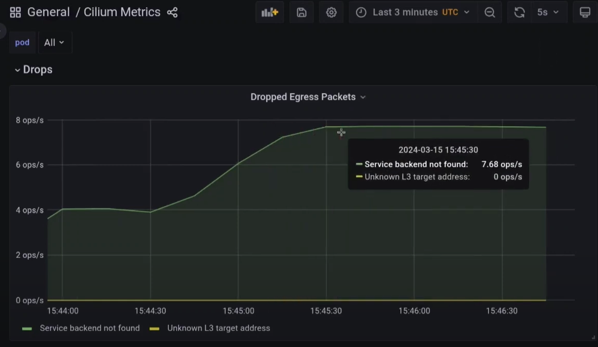
- 일부 cilium-agent 상태 저하
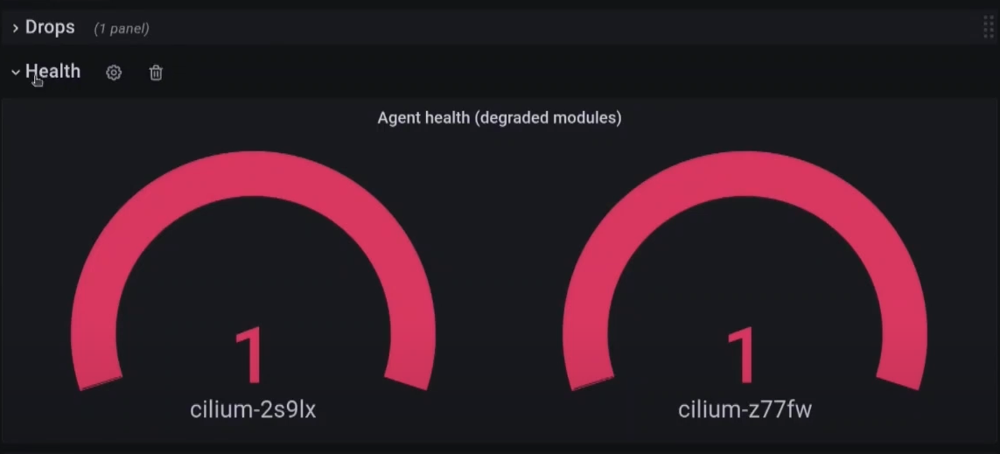
- 문제 원인 발견! : BPF map pressure 가 144%!
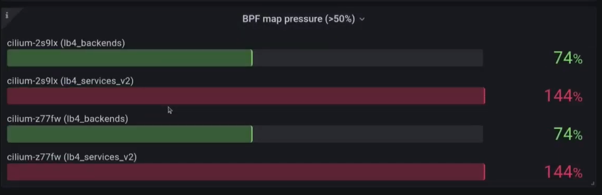
- 덕분에(?) 재조정 에러가 발생하고 있는 중
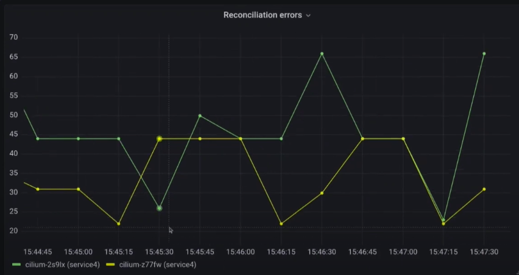
- lb4_service_v2 Map 업데이트 담당하는 조정자가 failed 확인!
kubectl exec -it -n kube-system ds/cilium -- cilium status --verbose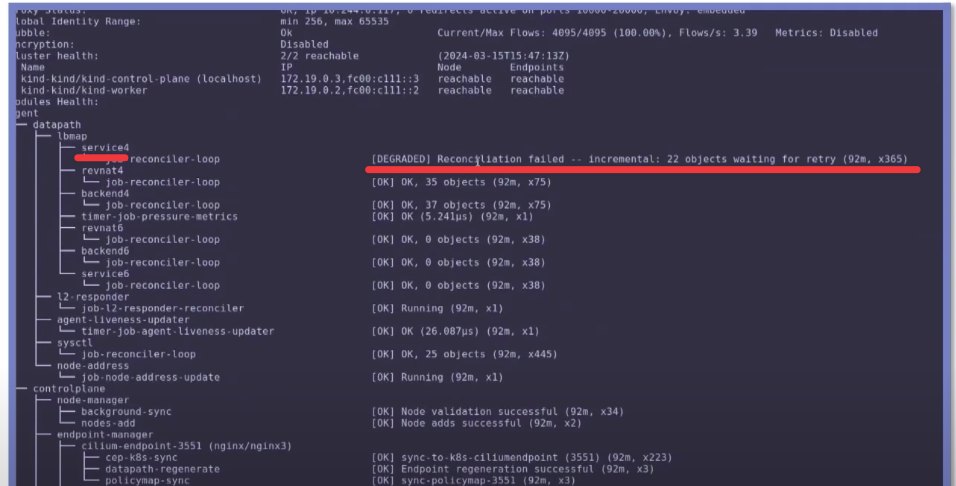
- Service Map 상태 정보 확인 : Error: map is full 확인
# 현재는 명령 입력 방식이 변경됨 k exec -it -n kube-system ds/cilium -- cilium statedb service4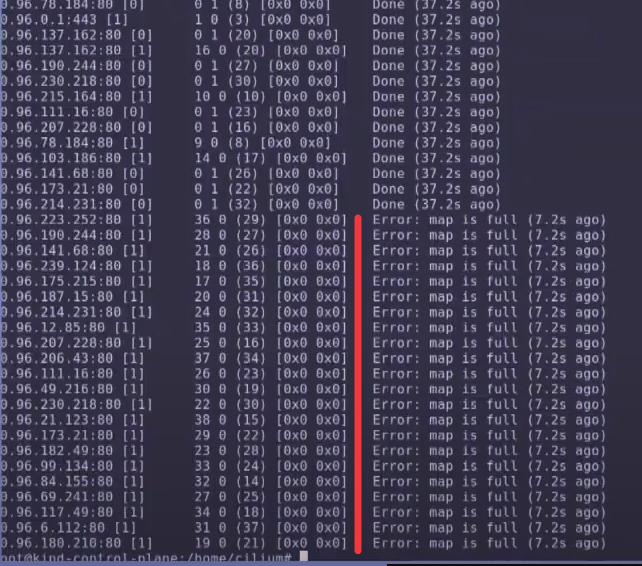
- 해결 방안 : service map 크기를 늘리거나, 혹은 기존 service 를 삭제
- 영상 데모에서는 service 들을 삭제 → 정상 상태 확인
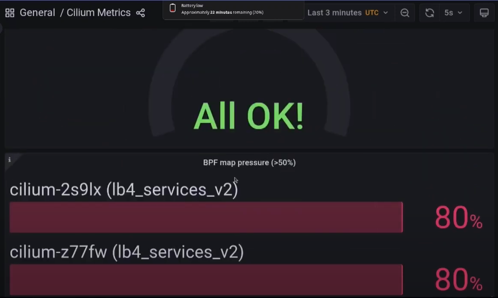
- Drop 발생 중 : 메트릭 Service bacnend not found
Deep Dive Into Cilium Resilient Architecture : API(Event) 와 Cilium-Agent(StateDB) 와 BPF 동작
- Cilium under the hood
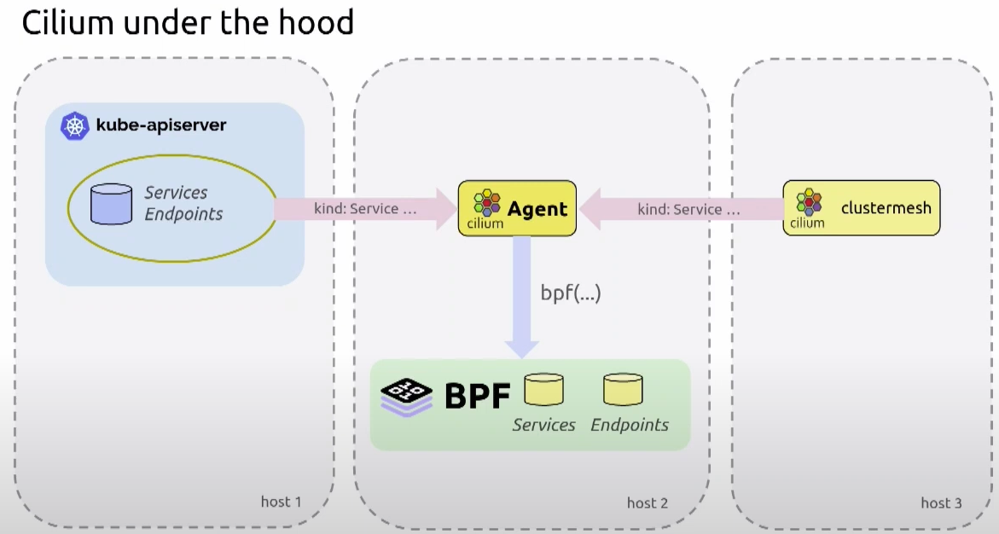
- 장애 발생 가능 지점 → 실제로 장애 발생 시 영향도와 대응법?
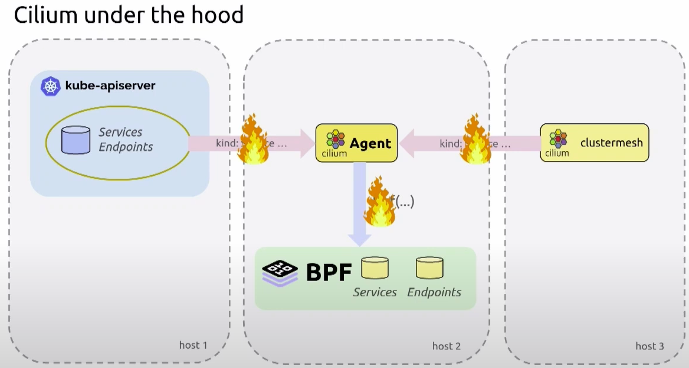
- k8s (api) 이벤트가 발생하여 service BPF map 업데이트가 필요한 상황
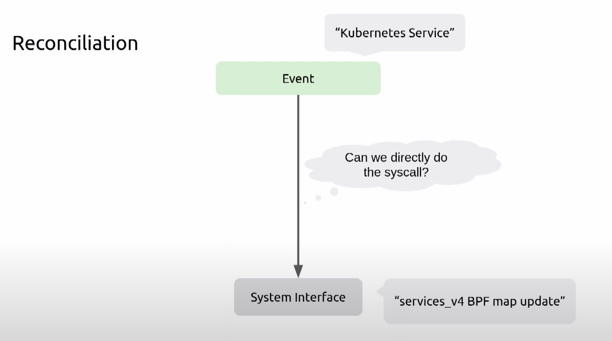
- map 이 가득 차있을 경우 업데이트 할 수 없음 → 결국 재시도 로직이 필요함 ⇒ 이를 위해 결국 저장소(StateDB)가 필요함!
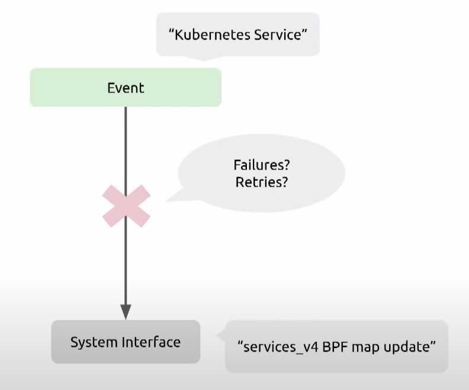
- 이를 위해, 중간 구성요소를 배치(DB, Reconciler) : 확인 방법, 메트릭 제공 등
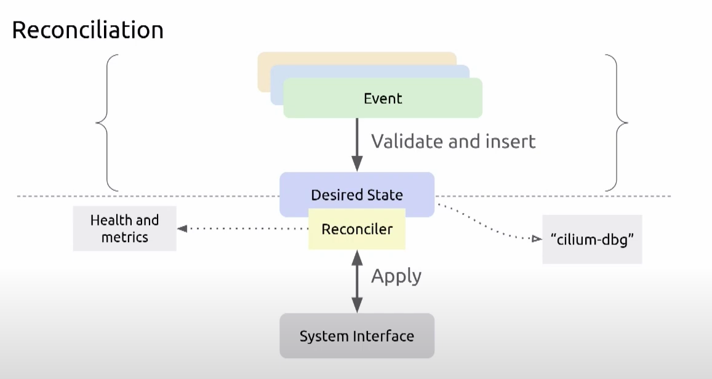
- StateDB: in-memory database for state
- In-memory transactional database
- Immutable revisioned objects indexed in immutable radix trees
- Channel-based change notification mechanism
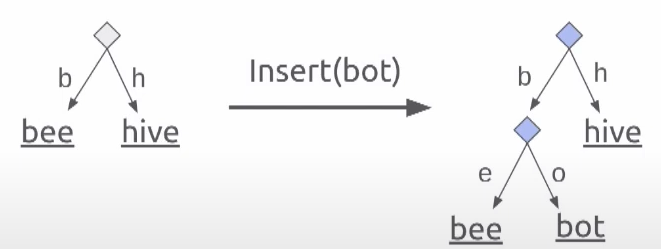
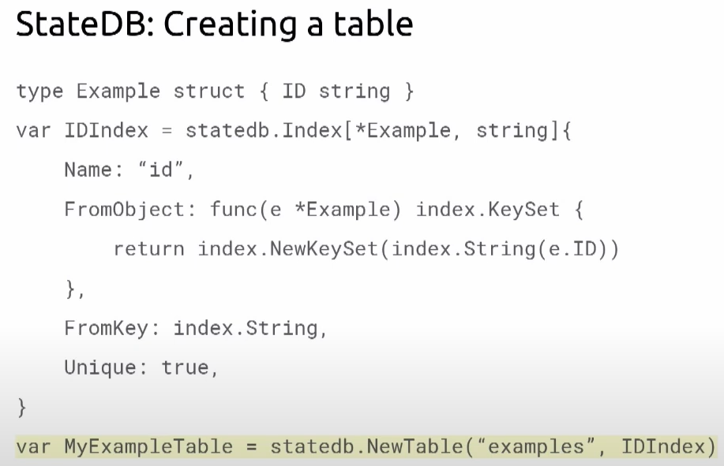
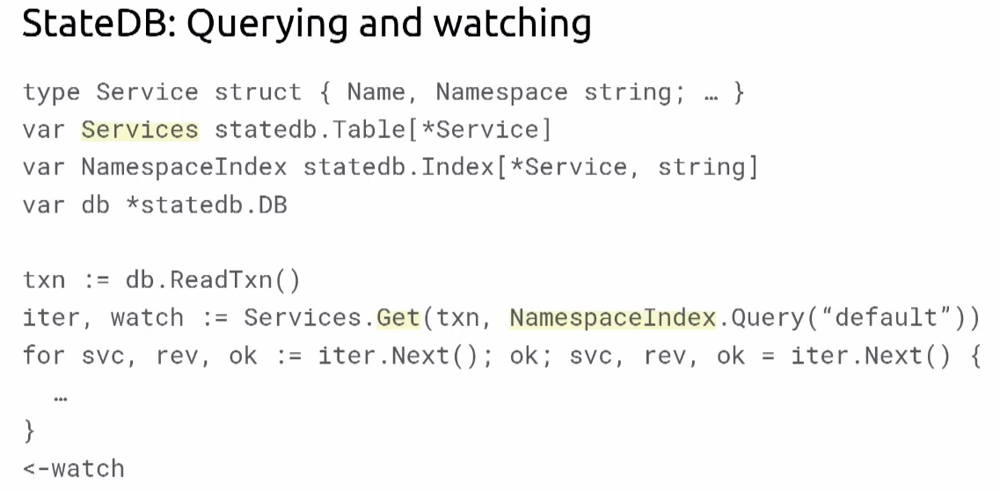
- StateDB Reconciler sms
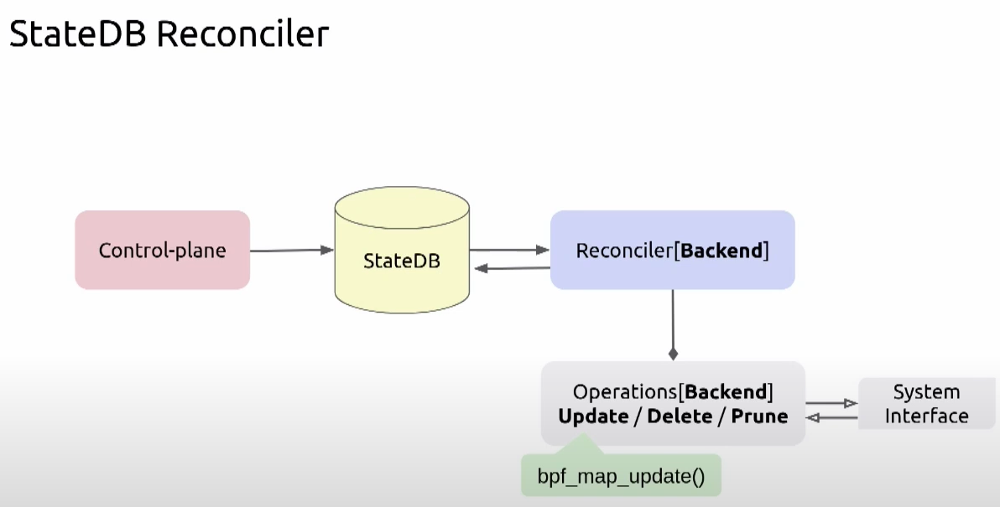
정상 동작 시 - map 업데이트 실패 시 : ENOSPC → 업데이트 메서드 실패가 위쪽으로 전파 → 재시도 동작
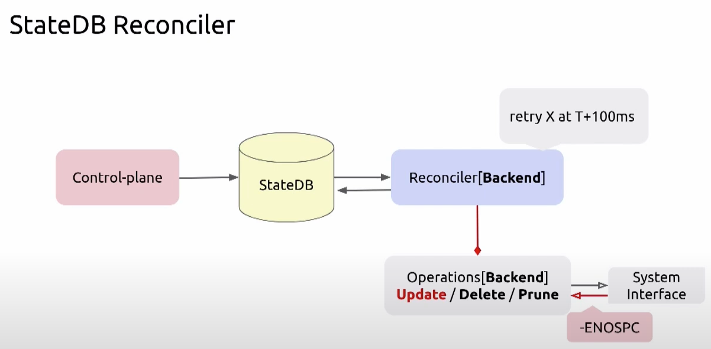
- 실패 상태와 메트릭 제공
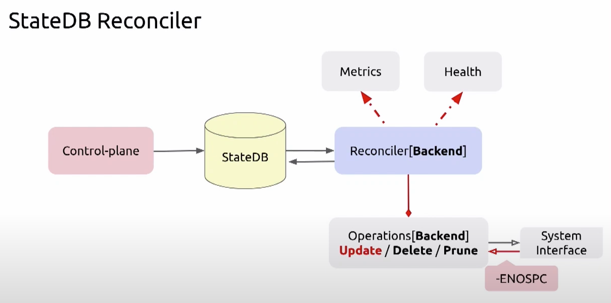
- Reconciler 는 요청 처리 상태 실패(Error)을 전달하여 StateDB에 실패 상태로 저장
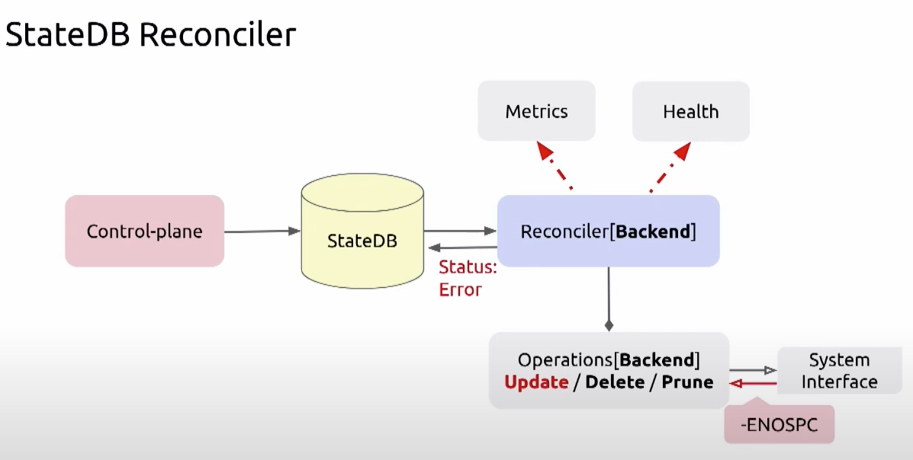
- cli 로 확인 시
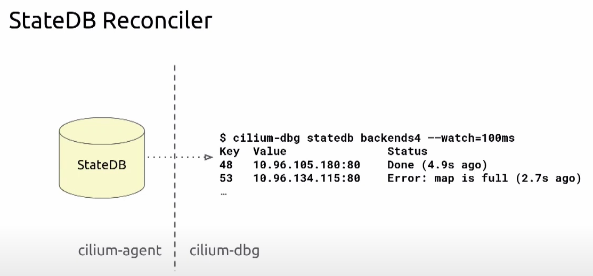
- Summary
- Infrastructure is ready (StateDB, Hive and Agent Health, Reconciler)
- In Cilium v1.16 we’ll see first use-cases, for example runtime device reconfiguration.
- New features highly encounraged to leverage the new tooling for improved resiliency and observability.
- Cilium under the hood
eBPF Maps : mapDynamicSizeRatio - Docs , Maps-Limits
- All eBPF maps are created with upper capacity limits. Insertion beyond the limit would fail or constrain the scalability of the datapath.
- Cilium is using auto-derived defaults based on the given ratio of the total system memory. → 메모리 비중 기준
- However, the upper capacity limits used by the Cilium agent can be overridden for advanced users. Please refer to the eBPF Maps guide.
# kubectl exec -it -n kube-system ds/cilium -- cilium status --verbose ... BPF Maps: dynamic sizing: on (ratio: 0.002500) Name Size Auth 524288 Non-TCP connection tracking 65536 TCP connection tracking 131072 Endpoints 65535 IP cache 512000 IPv4 masquerading agent 16384 IPv6 masquerading agent 16384 IPv4 fragmentation 8192 IPv4 service 65536 IPv6 service 65536 IPv4 service backend 65536 IPv6 service backend 65536 IPv4 service reverse NAT 65536 IPv6 service reverse NAT 65536 Metrics 1024 Ratelimit metrics 64 NAT 131072 Neighbor table 131072 Endpoint policy 16384 Policy stats 65536 Session affinity 65536 Sock reverse NAT 65536 # helm upgrade cilium cilium/cilium --version 1.18.1 --namespace kube-system --reuse-values \ --set bpf.distributedLRU.enabled=true --set bpf.mapDynamicSizeRatio=0.01 kubectl -n kube-system rollout restart ds/cilium # BPF Maps 에 많은 값들이 노드 총 메모리 비중별로 반영 kubectl exec -it -n kube-system ds/cilium -- cilium status --verbose ... BPF Maps: dynamic sizing: on (ratio: 0.010000) Name Size Auth 524288 Non-TCP connection tracking 219824 TCP connection tracking 439648 Endpoints 65535 IP cache 512000 IPv4 masquerading agent 16384 IPv6 masquerading agent 16384 IPv4 fragmentation 8192 IPv4 service 65536 IPv6 service 65536 IPv4 service backend 65536 IPv6 service backend 65536 IPv4 service reverse NAT 65536 IPv6 service reverse NAT 65536 Metrics 1024 Ratelimit metrics 64 NAT 439648 Neighbor table 439648 Endpoint policy 16384 Policy stats 65536 Session affinity 65536 Sock reverse NAT 219824- The following table presents the value that
kube-proxyand Cilium sets for their own connection tracking tables when Cilium is configured with--bpf-map-dynamic-size-ratio: 0.0025.
vCPU Memory (GiB) Kube-proxy CT entries Cilium CT entries 1 3.75 131072 131072 2 7.5 131072 131072 4 15 131072 131072 8 30 262144 284560 16 60 524288 569120 32 120 1048576 1138240 64 240 2097152 2276480 96 360 3145728 4552960
Kubernetes API server improvements : v1.18 부터 Cilium_client 가 K8S API 서버 부하분산/HA 연결 가능 - Blog
--set k8s.apiServerURLs="https://172.21.0.4:6443https://172.21.0.5:6443https://172.21.0.6:6443"
- Replacing kube-proxy requires the Cilium agent to communicate with the Kubernetes API server so that it is made aware of changes within the cluster (such as new or updated services and endpoints).
- Prior to 1.18, the Cilium agent could only be configured to speak with a single instance of the API server. Unfortunately, in most production environments, multiple API servers are deployed to provide high availability.
- To provide the required High Availability in the event of an API server failure, a new flag (
--k8s-api-server-urls)has been added that allows a user to specify a number of Kubernetes API servers.
- Cilium finds a working API server from this list for an initial conversation, and then changes over to using the internal Kubernetes API service address which has load balancing and high availability.

https://isovalent.com/blog/post/cilium-1-18/#operations # kubectl exec -it -n kube-system ds/cilium -- cilium-agent -h ... --enable-k8s Enable the k8s clientset (default true) --enable-k8s-api-discovery Enable discovery of Kubernetes API groups and resources with the discovery API --k8s-api-server-urls strings Kubernetes API server URLs --k8s-client-burst int Burst value allowed for the K8s client (default 20) --k8s-client-connection-keep-alive duration Configures the keep alive duration of K8s client connections. K8 client is disabled if the value is set to 0 (default 30s) --k8s-client-connection-timeout duration Configures the timeout of K8s client connections. K8s client is disabled if the value is set to 0 (default 30s) --k8s-client-qps float32 Queries per second limit for the K8s client (default 10) --k8s-heartbeat-timeout duration Configures the timeout for api-server heartbeat, set to 0 to disable (default 30s) ...- 일부 시나리오에서는 Kubernetes API 서버에서 정보를 검색하면 과부하가 걸리거나 API 서버의 가용성에 해로울 수 있습니다(특히 LIST 요청).
- API 서버에 요청 시 exponential back-off 설정 가능.
k8sClientExponentialBackoff: enabled: true backoffBaseSeconds: 1 backoffMaxDurationSeconds: 120
- Kubernetes perf-tests
- https://github.com/kubernetes/perf-tests : Kubernetes-related performance test related tools
ClusterLoader2 (CL2) : Kubernetes 부하 테스트 도구이자 공식 K8s 확장성 및 성능 테스트 프레임워크 - Link
- 테스트는 클러스터의 원하는 상태 집합(예: 10,000개의 포드, 2,000개의 클러스터 IP 서비스 또는 5개의 데몬 세트를 실행)을 정의하고 각 상태에 도달하는 속도(포드 처리량)를 지정합니다.
- CL2는 또한 측정할 성능 특성을 정의합니다( 자세한 내용은 측정 목록 참조 ).
- 마지막으로, CL2는 Prometheus를 사용한 테스트 중에 클러스터에 대한 추가적인 관측성을 제공합니다.
사용 가능한 측정값
- APIAvailabilityMeasurement
이 측정값은 클러스터 제어 평면의 가용성에 대한 정보를 수집합니다.
이를 측정하는 두 가지 방법이 약간 다릅니다.
- 클러스터 수준 가용성, 여기서 우리는 주기적으로 API 호출을 발행합니다
/readyz
- 호스트 수준 가용성은 각 제어 평면의 호스트
/readyz엔드포인트를 주기적으로 폴링하는 것입니다.- 이렇게 하려면 exec 서비스를 활성화해야 합니다.
- 클러스터 수준 가용성, 여기서 우리는 주기적으로 API 호출을 발행합니다
- API 응답성
PrometheusSimple 이 측정값은 Prometheus 서버에서 수집한 데이터를 기반으로 서버 API 호출의 지연 시간과 호출 횟수에 대한 백분위수를 생성합니다. API 호출은 리소스, 하위 리소스, 동사 및 범위로 구분됩니다.
이 측정값은 API 호출 지연 시간 SLO가 충족되는지 확인합니다. Prometheus 서버를 사용할 수 없는 경우 측정은 건너뜁니다.
- APIResponsivenessPrometheus
이 측정값은 Prometheus 서버에서 수집한 데이터를 기반으로 서버 API 호출의 지연 시간과 개수에 대한 요약을 생성합니다. API 호출은 리소스, 하위 리소스, 동사, 범위로 구분됩니다. 이 측정값은 API 호출 지연 시간 SLO가 충족되는지 확인합니다 . Prometheus 서버를 사용할 수 없는 경우 측정은 건너뜁니다.
- CPUProfile
이 측정은 pprof가 제공한 특정 구성 요소에 대한 CPU 사용 프로필을 수집합니다.
- EtcdMetrics
이 측정은 일련의 etcd 메트릭과 해당 데이터베이스 크기를 수집합니다.
- MemoryProfile
이 측정은 pprof가 제공한 특정 구성 요소에 대한 메모리 프로필을 수집합니다.
- MetricsForE2E
측정은 kube-apiserver, 컨트롤러 관리자, 스케줄러 및 선택적으로 모든 kubelet에서 메트릭을 수집합니다.
- PodPeriodicCommand
이 측정은 레이블 선택기로 지정된 포드에서 일정 간격으로 명령을 지속적으로 실행합니다. 각 명령의 출력이 수집되어 측정 기간 동안 CPU 및 메모리 프로필과 같은 정보를 폴링할 수 있습니다.
- PodStartupLatency
이 측정은 Pod 시작 SLO가 충족되는지 확인합니다.
- ResourceUsageSummary:
이 측정은 구성 요소별 리소스 사용량을 수집합니다. 수집 실행 중 수집된 데이터는 관찰된 각 구성 요소의 90, 99, 100번째 사용 백분위수를 나타내는 요약으로 변환됩니다.
선택적으로 리소스 제약 조건 파일을 측정에 제공할 수 있습니다. 리소스 제약 조건 파일은 특정 구성 요소의 CPU 및/또는 메모리 제약 조건을 지정합니다. 제약 조건 중 하나라도 위반하면 오류가 반환되고 테스트가 실패합니다.
- SchedulingMetrics
이 측정은 스케줄러 메트릭 세트를 수집합니다.
- SchedulingThroughput
이 측정은 스케줄링 처리량을 수집합니다.
- 타이머
타이머를 사용하면 테스트의 특정 부분에 대한 대기 시간을 측정할 수 있습니다(단일 타이머로 다양한 작업을 독립적으로 측정할 수 있음).
- WaitForControlledPodsRunning
이 측정값은 지정된 제어 객체(ReplicationController, ReplicaSet, Deployment, DaemonSet 및 Job)가 모든 포드를 실행할 때까지 대기하는 장벽 역할을 합니다. 제어 객체는 레이블 선택자, 필드 선택자 및 네임스페이스로 지정할 수 있습니다. 시간 초과가 발생하면 테스트는 계속 실행되고 오류가 기록되며 테스트는 실패로 표시됩니다.
- WaitForRunningPods:
필요한 수의 Pod가 실행될 때까지 기다리는 배리어입니다. Pod는 레이블 선택자, 필드 선택자 및 네임스페이스로 지정할 수 있습니다. 시간 초과가 발생하면 테스트는 계속 실행되고 오류가 기록되며 테스트는 실패로 표시됩니다.
- Sleep
요청된 시간이 지날 때까지 기다리는 장벽입니다.
- WaitForGenericK8sObjects
Type=StatusNodeReady=True는 필요한 개수의 K8s 객체가 필요한 조건을 충족할 때까지 대기하는 배리어입니다. 이러한 조건은
다음과 같이 형식 요구 사항 목록으로 지정할 수 있습니다
. 시간 초과가 발생하면 테스트는 계속 실행되고 오류가 기록되며 테스트는 실패로 표시됩니다.
- APIAvailabilityMeasurement
- kind 에서 1대 노드에서 간단 테스트 가이드 소개 - Guide
- 100노드 규모 테스트 실행 - Guide , LoadCode
- 테스트 단계 : 객체 생성 → 원래 크기의 50%, 150% 사이로 개체 크기 조정 → 객체 삭제
- 100개 노드부터 최대 5,000개 노드까지 클러스터를 테스트하는 데 사용할 수 있습니다.
- 부하 테스트는 약 30개의 노드로 구성된 포드 객체를 생성합니다. 다음과 같은 객체가 생성됩니다.
- deployments
- jobs
- statefulsets
- services
- secrets
- configmaps
- deployments, jobs and statefulsets - 소규모(포드 5개), 중규모(포드 30개), 대규모(포드 250개) 버전.
- First, you need to create 100-nodes cluster then you can run cluster scale test with this command:
# --enable-prometheus-server=true deploys prometheus server using prometheus-operator. ./run-e2e-with-prometheus-fw-rule.sh cluster-loader2 --testconfig=./testing/load/config.yaml --nodes=100 --provider=gke --enable-prometheus-server=true --kubeconfig=${HOME}/.kube/config --v=2
- 프로메테우스 측정 기준에 따라 다양한 측정이 가능합니다. 예를 들어,
- API 응답성 - kube-apiserver에 대한 요청 지연 시간을 측정합니다.
- 스케줄링 처리량
- NodeLocalDNS 대기 시간
DNS (CoreDNS, nodeLocal DNSCache) : DNS 성능 테스트를 실행하는 데 사용되는 스크립트 포함 - Link
- The performance script
runbenchmarks the performance of a single DNS server instance with a synthetic query workload.
- Benchmarking the cluster DNS : coredns 성능 측정 - 결과
- Comparing cluster DNS and NodeLocal DNSCache : NodeLocal DNSCache 활성화 시 성능 비교 - 결과
- CoreDNS and kube-dns v1.5+ (image
registry.k8s.io/kubedns-amd64:1.9) can export Prometheus metrics.
- 성능 측정 관련 질문?
- What is the maximum queries per second (QPS) we can get from the Kubernetes DNS service given no limits?
- If we restrict CPU resources, what is the performance we can expect? (i.e. resource limits in the pod yaml).
- What are the SLOs (e.g. query latency) for a given setting that the user can expect? Alternate phrasing: what can we expect in realistic workloads that do not saturate the service?
- The performance script
Benchmarking Kubernetes Networking Performance : Kubernetes 네트워킹 성능을 측정하는 표준화된 벤치마크 - Link
- 벤치마크는 단일 Go 바이너리 호출을 통해 실행할 수 있으며, 아래에서 볼 수 있듯이 오케스트레이터 및 워커 포드에 있는 모든 자동화 테스트를 트리거합니다.
- 테스트는 go 바이너리와 iperf3 및 기타 도구가 내장된 사용자 지정 도커 컨테이너를 사용합니다.
- 오케스트레이터 포드는 아래 설명된 5가지 시나리오에 대해 MTU(TCP의 경우 MSS 튜닝, UDP의 경우 직접 패킷 크기 튜닝)를 사용하여 직렬 순서로 테스트를 실행하도록 워커 포드를 조정합니다.
- 노드 레이블을 사용하여 워커 포드 1과 2는 동일한 쿠버네티스 노드에 배치되고, 워커 포드 3은 다른 노드에 배치됩니다.
- 모든 노드는 간단한 golang rpcs를 사용하여 오케스트레이터 포드 서비스와 통신하고 작업 항목을 요청합니다.
- 이 테스트에는 최소 두 개의 쿠버네티스 워커 노드가 필요합니다.
The 5 major network traffic paths are combination of Pod IP vs Virtual IP and whether the pods are co-located on the same node/VM versus a remotely located pod. > Same VM using Pod IP Same VM Pod to Pod traffic tests from Worker 1 to Worker 2 using its Pod IP. > Same VM using Cluster/Virtual IP Same VM Pod to Pod traffic tests from Worker 1 to Worker 2 using its Service IP (also known as its Cluster IP or Virtual IP). > Remote VM using Pod IP Worker 3 to Worker 2 traffic tests using Worker 2 Pod IP. > Remote VM using Cluster/Virtual IP Worker 3 to Worker 2 traffic tests using Worker 2 Cluster/Virtual IP. > Same VM Pod Hairpin to itself using Cluster IP- 오케스트레이터와 워커 파드는 이니시에이터 스크립트와 독립적으로 실행되며, 오케스트레이터 파드는 테스트 케이스 일정이 완료될 때까지 워커들에게 작업 항목을 전송합니다.
- 모든 워커 노드의 iperf 출력(TCP 및 UDP 모드 모두)과 netperf TCP 출력은 오케스트레이터 파드에 업로드되어 필터링되고 그 결과는 netperf.csv에 기록됩니다.
- 그런 다음 실행 스크립트는 netperf.csv 파일을 추출하여 로컬 디스크에 기록합니다. csv 파일의 모든 단위는 Mbit/초입니다.
- 모든 쿠버네티스 엔티티는 "netperf" 네임스페이스 아래에 생성됩니다.
- CSV 데이터 출력
MSS , Maximum, 96, 352, 608, 864, 1120, 1376, 1 iperf TCP. Same VM using Pod IP ,35507.000000,33835,33430,35372,35220,35373,35507, 2 iperf TCP. Same VM using Virtual IP ,32997.000000,32689,32997,32256,31995,31904,31830, 3 iperf TCP. Remote VM using Pod IP ,10652.000000,8793,9836,10602,9959,9941,10652, 4 iperf TCP. Remote VM using Virtual IP ,11046.000000,10429,11046,10064,10622,10528,10246, 5 iperf TCP. Hairpin Pod to own Virtual IP ,32400.000000,31473,30253,32075,32058,32400,31734, 6 iperf UDP. Same VM using Pod IP ,10642.000000,10642, 7 iperf UDP. Same VM using Virtual IP ,8983.000000,8983, 8 iperf UDP. Remote VM using Pod IP ,11143.000000,11143, 9 iperf UDP. Remote VM using Virtual IP ,10836.000000,10836, 10 netperf. Same VM using Pod IP ,11675.380000,11675.38, 11 netperf. Same VM using Virtual IP ,0.000000,0.00, 12 netperf. Remote VM using Pod IP ,6646.820000,6646.82, 13 netperf. Remote VM using Virtual IP ,0.000000,0.00,
- CSV 데이터 그래프화
- matplotlib을 사용하여 csv 데이터(및 호환성을 위해 PNG 및 JPG 파일)에서 그래프 SVG 파일을 생성합니다.
- 파이썬 Matplotlib 라인 차트
- 막대 차트
- MSS를 무시하고 최대 대역폭 수치를 사용하면 막대형 차트가 성능을 비교하는 데 더 나은 도구가 될 수 있습니다.
- CSV 데이터를 Google 시트로 가져와서 그래프로 표현하는 것도 가능합니다.
- matplotlib을 사용하여 csv 데이터(및 호환성을 위해 PNG 및 JPG 파일)에서 그래프 SVG 파일을 생성합니다.
- Network policy enforcement latency : Pod 및 네트워크 정책 변경에 대한 네트워크 정책 적용 지연 시간을 측정 - Link
Kubernetes Perfdash : 성능 지표를 수집하고 표시하는 웹 UI - Link , Demo
- 성능 지표는 다양한 노드 수, 플랫폼 유형 및 플랫폼 버전에 대한 성능 테스트 결과를 기반으로 생성됩니다.
- 지원되는 메트릭
- Responsiveness
- Resources
- PodStartup
- TestPhaseTimer
- RequestCount
- RequestCountByClient
perfdash 설치 및 접속 -Link- 제공 메트릭
- Responsiveness
- Resources
- PodStartup
- TestPhaseTimer
- RequestCount
- RequestCountByClient
# cd perf-tests/perfdash # 빌드 go mod tidy go build -o perfdash . ./perfdash -h # docker build . -t perfdash docker images REPOSITORY TAG IMAGE ID CREATED SIZE perfdash latest 8b1efe5483c4 About a minute ago 144MB # docker tag perfdash gasida/perfdash:latest docker push gasida/perfdash:latest # cp deployment.yaml deployment.bak # VSCODE 수정 : deployment.yaml ## image: gasida/perfdash ## resources.requests : cpu 1, memory 0.5G # kubectl create ns perfdash kubectl apply -f deployment.yaml # cat << EOF | kubectl apply -f - apiVersion: v1 kind: Service metadata: name: perfdash-status namespace: perfdash labels: app: perfdash spec: selector: app: perfdash ports: - name: status port: 80 targetPort: 8080 nodePort: 30004 type: NodePort EOF # open http://127.0.0.1:30004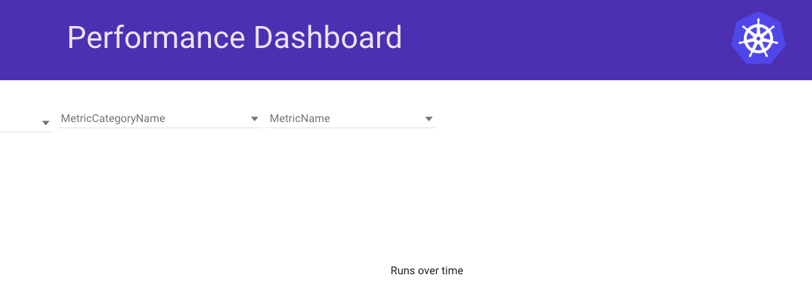
- 제공 메트릭
Kubernetes Performance SLO monitor : api 서버로 수집할 수 없는 성능 SLOs 를 모니터링 및 메트릭 노출 - Link
- SLO monitor is a simple pod that needs to be able to read Pods and Events.
- On top of that it should work as long as it can communicate with the API server.
- CL2(=ClusterLoader2) 실습해보기
준비 - Go , Install
(옵션) hostPC에 직접 설정
# go 설치 go version go version go1.24.3 darwin/arm64 # git clone https://github.com/kubernetes/perf-tests.git cd perf-tests/ tree -L 2 cd clusterloader2
(옵션) CL2 Getting Started : 기본 환경 설치, GVM - Link
- In this tutorial, we will:
- Set-up perf-tests repository for local development
- Create single node cluster using Kind
- Implement a simple CL2 test and run it
- Run load test on 100 nodes cluster
- Clone perf-tests repository
# git clone https://github.com/kubernetes/perf-tests.git cd perf-tests tree -L 2 tree -L 1
- Install GVM
# 1. 필수 의존성 설치 brew install curl git mercurial make binutils bison gcc # 2. GVM 설치 bash < <(curl -s -S -L https://raw.githubusercontent.com/moovweb/gvm/master/binscripts/gvm-installer) # 3. 셸 설정파일에 추가 (zsh 기준) echo '[[ -s "$HOME/.gvm/scripts/gvm" ]] && source "$HOME/.gvm/scripts/gvm"' >> ~/.zshrc source ~/.zshrc # 설치 확인 gvm version Go Version Manager v1.0.22 installed at /Users/gasida/.gvm- Install golang with specific version (1.24.3 was tested in this tutorial):
# GVM 초기화 및 설치 준비 ## gvm은 내부적으로 Go 부트스트랩용 초기 버전를 먼저 설치하고, 이를 이용해 최신 Go를 빌드합니다. gvm install go1.21.0 -B gvm use go1.21.0 # 바로 1.24.3 설치 못하며, 중간 버전 필요 gvm install go1.22.6 gvm use go1.22.6 # 목표 버전 설치 gvm install go1.24.3 -B gvm use go1.24.3 # gvm list gvm use go1.24.3 --default # cd kind/perf-tests pwd /Users/gylee/Documents/Study/cilium/week7/cl2/perf-tests # Next, add perf-tests repository to GOPATH: ## GVM은 내부 GOPATH (~/.gvm/pkgsets/.../global/src) 아래에 다음처럼 링크 생성 ## 이제 Go에서 다음처럼 임포트할 수 있음 import "k8s.io/perf-tests/clusterloader2" gvm linkthis k8s.io/perf-tests /Users/gylee/.gvm/pkgsets/go1.24.3/global/src/k8s.io/perf-tests -> /Users/gylee/Documents/Study/cilium/week7/cl2/perf-tests
- In this tutorial, we will:
Prepare simple test to run - Link
- Let's prepare our first test config (config.yaml). This test will:
- Create one namespace
- Create a single deployment with 10 pods inside that namespace
- Measure startup latency of these pod
- config.yaml 파일 작성 : pod 생성 및 기동 시간(latency) 측정
- 측정 시작 (Pod startup 및 pod 상태 추적)
- Deployment 생성 (10개 파드 생성, 1 QPS 속도)
- Pod들이 Running 상태가 될 때까지 기다림
- Pod startup latency 최종 측정
cat << EOF > config.yaml name: test namespace: number: 1 # 네임스페이스 1개 tuningSets: # 부하(tuning)를 조절하는 방식 정의 - name: Uniform1qps qpsLoad: qps: 1 # 초당 1개의 오브젝트를 생성 steps: - name: Start measurements # Step 1 : 측정 시작 measurements: # 두 개의 메트릭을 수집 준비 - Identifier: PodStartupLatency # 레이블 group=test-pod 을 가진 pod의 기동 시간 측정 Method: PodStartupLatency Params: action: start labelSelector: group = test-pod threshold: 20s - Identifier: WaitForControlledPodsRunning # Deployment가 관리하는 pod들이 Running 상태가 될 때까지 대기하는 측정 시작 Method: WaitForControlledPodsRunning Params: action: start apiVersion: apps/v1 kind: Deployment labelSelector: group = test-deployment operationTimeout: 120s - name: Create deployment # Step 2: 디플로이먼트 생성 , 실제로 테스트 리소스를 생성하는 단계 phases: - namespaceRange: # 하나의 namespace에서 test-deployment라는 이름으로 deployment를 생성 min: 1 max: 1 replicasPerNamespace: 1 tuningSet: Uniform1qps # 초당 1개의 리소스를 생성 (Uniform1qps 사용) objectBundle: - basename: test-deployment objectTemplatePath: "deployment.yaml" templateFillMap: Replicas: 10 # deployment.yaml 템플릿 파일을 바탕으로 Replicas=10으로 파드를 생성 - name: Wait for pods to be running # Step 3: Pod 상태 대기 measurements: - Identifier: WaitForControlledPodsRunning Method: WaitForControlledPodsRunning # deployment에 의해 생성된 pod들이 Running 상태가 되는 것을 기다림 Params: action: gather # 앞서 시작한 WaitForControlledPodsRunning 측정값을 수집(gather) 하는 단계 - name: Measure pod startup latency # Step 4: Pod 시작 시간 측정 measurements: - Identifier: PodStartupLatency # PodStartupLatency 메트릭을 수집(gather) 하여 측정 종료 Method: PodStartupLatency # Pod 생성 요청 시점부터 Running 상태가 될 때까지의 소요 시간을 측정 Params: action: gather EOF
- deployment.yaml
{{.Name}},{{.Replicas}}등은 Go 템플릿 문법으로,config.yaml에서templateFillMap에 의해 동적으로 채워짐.
cat << EOF > deployment.yaml apiVersion: apps/v1 kind: Deployment metadata: name: {{.Name}} # 이 deployment의 이름. 템플릿으로 되어 있어 실행 시 test-deployment 등이 동적으로 삽입 labels: group: test-deployment # group: test-deployment 라는 라벨은, 테스트 시 이 리소스를 식별하기 위해 사용 spec: replicas: {{.Replicas}} # config.yaml의 templateFillMap.Replicas: 10에 따라 10으로 대체됨 selector: matchLabels: group: test-pod template: metadata: labels: group: test-pod spec: containers: - image: registry.k8s.io/pause:3.9 name: {{.Name}} EOF
- Let's prepare our first test config (config.yaml). This test will:
Execute test :
go run cmd/clusterloader.go -h- Link# clusterloader.go 위치 cd clusterloader2 ls cmd clusterloader.go # config.yaml, deployment.yaml copy cp ../config.yaml . && cp ../deployment.yaml . # 모니터링 watch -d kubectl get ns,pod -A # perf-tests/clusterloader2 위치에서 아래 명령어 수행 해야됨!! go run cmd/clusterloader.go -h go run cmd/clusterloader.go --testconfig=config.yaml --provider=kind --kubeconfig=${HOME}/.kube/config --v=2 I0830 19:06:10.099623 50593 simple_test_executor.go:411] Resources cleanup time: 15.012490958s I0830 19:06:10.099664 50593 simple_test_executor.go:414] Tearing down dependencies I0830 19:06:10.099673 50593 simple_test_executor.go:418] All dependencies torn down successfully, cleanup time: 10.167µs I0830 19:06:10.099684 50593 clusterloader.go:253] -------------------------------------------------------------------------------- I0830 19:06:10.099691 50593 clusterloader.go:254] Test Finished I0830 19:06:10.099695 50593 clusterloader.go:255] Test: config.yaml I0830 19:06:10.099699 50593 clusterloader.go:256] Status: Success I0830 19:06:10.099703 50593 clusterloader.go:260] -------------------------------------------------------------------------------- JUnit report was created: /Users/gylee/Documents/Study/cilium/week7/cl2/perf-tests/clusterloader2/junit.xml I0830 19:06:10.101718 50593 prometheus.go:331] Get snapshot from Prometheus I0830 19:06:10.101738 50593 exec_service.go:130] Exec service: tearing down service # At the end of clusterloader output you should see pod startup latency: I0830 19:05:55.086659 50593 simple_test_executor.go:97] PodStartupLatency_PodStartupLatency: { "version": "1.0", "dataItems": [ { "data": { "Perc50": 1738.045, "Perc90": 1752.78, "Perc99": 1756.967 }, "unit": "ms", "labels": { "Metric": "schedule_to_watch" } }, { "data": { "Perc50": 1738.045, "Perc90": 1752.78, "Perc99": 1756.967 }, "unit": "ms", "labels": { "Metric": "pod_startup" } }, { "data": { "Perc50": 0, "Perc90": 0, "Perc99": 0 }, "unit": "ms", "labels": { "Metric": "create_to_schedule" } }, { "data": { "Perc50": 0, "Perc90": 0, "Perc99": 0 }, "unit": "ms", "labels": { "Metric": "schedule_to_run" } }, { "data": { "Perc50": 1738.045, "Perc90": 1752.78, "Perc99": 1756.967 }, "unit": "ms", "labels": { "Metric": "run_to_watch" } } ] } I0830 19:05:55.086763 50593 simple_test_executor.go:97] StatelessPodStartupLatency_PodStartupLatency: { "version": "1.0", "dataItems": [ { "data": { "Perc50": 0, "Perc90": 0, "Perc99": 0 }, "unit": "ms", "labels": { "Metric": "schedule_to_run" } }, { "data": { "Perc50": 1738.045, "Perc90": 1752.78, "Perc99": 1756.967 }, "unit": "ms", "labels": { "Metric": "run_to_watch" } }, { "data": { "Perc50": 1738.045, "Perc90": 1752.78, "Perc99": 1756.967 }, "unit": "ms", "labels": { "Metric": "schedule_to_watch" } }, { "data": { "Perc50": 1738.045, "Perc90": 1752.78, "Perc99": 1756.967 }, "unit": "ms", "labels": { "Metric": "pod_startup" } }, { "data": { "Perc50": 0, "Perc90": 0, "Perc99": 0 }, "unit": "ms", "labels": { "Metric": "create_to_schedule" } } ] } I0830 19:05:55.086834 50593 simple_test_executor.go:97] StatefulPodStartupLatency_PodStartupLatency: { "version": "1.0", "dataItems": [ { "data": { "Perc50": 0, "Perc90": 0, "Perc99": 0 }, "unit": "ms", "labels": { "Metric": "run_to_watch" } }, { "data": { "Perc50": 0, "Perc90": 0, "Perc99": 0 }, "unit": "ms", "labels": { "Metric": "schedule_to_watch" } }, { "data": { "Perc50": 0, "Perc90": 0, "Perc99": 0 }, "unit": "ms", "labels": { "Metric": "pod_startup" } }, { "data": { "Perc50": 0, "Perc90": 0, "Perc99": 0 }, "unit": "ms", "labels": { "Metric": "create_to_schedule" } }, { "data": { "Perc50": 0, "Perc90": 0, "Perc99": 0 }, "unit": "ms", "labels": { "Metric": "schedule_to_run" } } ] }
Execute test 실행 시 출력 내용 : exec 파드 3개 기동 → 디플로이먼트에 파드 10개 생성 → 디플로이먼트 삭제 → exec 파드 삭제
- 흐름 설명
- 초기화
- 커스텀 메트릭 측정 도구 등록 (dns_performance, network_performance)
- 클러스터 정보 추출 (master internal IP, 노드 수)
- Exec 서비스 배포
- manifest/exec_deployment.yaml 배포 후 3개 Pod 정상 기동
- 테스트 시작
- config.yaml 테스트 정의에 따라 순차 실행
- [Step 01] 메트릭 측정 시작
- PodStartupLatency, WaitForControlledPodsRunning 등 설정
- [Step 02] Deployment 생성
- Deployment 1개, 총 10개 Pod 생성됨
- [Step 03] Pod 기동 완료까지 대기
- Pod 상태 모니터링 (10개 모두 Running)
- [Step 04] Pod 기동 시간 측정
- pod_startup_latency 등 여러 지표 계산
- 테스트 종료 및 리소스 정리
# perf-tests/clusterloader2 위치에서 아래 명령어 수행 해야됨!! go run cmd/clusterloader.go --testconfig=config.yaml --provider=kind --kubeconfig=${HOME}/.kube/config --v=2 I0830 19:05:55.086423 50593 phase_latency.go:146] PodStartupLatency: perc50: 0s, perc90: 0s, perc99: 0s I0830 19:05:55.086480 50593 phase_latency.go:141] PodStartupLatency: 0 worst run_to_watch latencies: [] I0830 19:05:55.086489 50593 phase_latency.go:146] PodStartupLatency: perc50: 0s, perc90: 0s, perc99: 0s I0830 19:05:55.086503 50593 phase_latency.go:141] PodStartupLatency: 0 worst schedule_to_watch latencies: [] I0830 19:05:55.086510 50593 phase_latency.go:146] PodStartupLatency: perc50: 0s, perc90: 0s, perc99: 0s I0830 19:05:55.086523 50593 phase_latency.go:141] PodStartupLatency: 0 worst pod_startup latencies: [] I0830 19:05:55.086532 50593 phase_latency.go:146] PodStartupLatency: perc50: 0s, perc90: 0s, perc99: 0s; threshold 20s I0830 19:05:55.086545 50593 phase_latency.go:141] PodStartupLatency: 0 worst create_to_schedule latencies: [] I0830 19:05:55.086552 50593 phase_latency.go:146] PodStartupLatency: perc50: 0s, perc90: 0s, perc99: 0s I0830 19:05:55.086564 50593 phase_latency.go:141] PodStartupLatency: 0 worst schedule_to_run latencies: [] I0830 19:05:55.086570 50593 phase_latency.go:146] PodStartupLatency: perc50: 0s, perc90: 0s, perc99: 0s I0830 19:05:55.086631 50593 simple_test_executor.go:183] Step "[step: 04] Measure pod startup latency" ended I0830 19:05:55.086659 50593 simple_test_executor.go:97] PodStartupLatency_PodStartupLatency: { "version": "1.0", "dataItems": [ { "data": { "Perc50": 1738.045, "Perc90": 1752.78, "Perc99": 1756.967 }, "unit": "ms", "labels": { "Metric": "schedule_to_watch" } }, { "data": { "Perc50": 1738.045, "Perc90": 1752.78, "Perc99": 1756.967 }, "unit": "ms", "labels": { "Metric": "pod_startup" } }, { "data": { "Perc50": 0, "Perc90": 0, "Perc99": 0 }, "unit": "ms", "labels": { "Metric": "create_to_schedule" } }, { "data": { "Perc50": 0, "Perc90": 0, "Perc99": 0 }, "unit": "ms", "labels": { "Metric": "schedule_to_run" } }, { "data": { "Perc50": 1738.045, "Perc90": 1752.78, "Perc99": 1756.967 }, "unit": "ms", "labels": { "Metric": "run_to_watch" } } ] } I0830 19:05:55.086763 50593 simple_test_executor.go:97] StatelessPodStartupLatency_PodStartupLatency: { "version": "1.0", "dataItems": [ { "data": { "Perc50": 0, "Perc90": 0, "Perc99": 0 }, "unit": "ms", "labels": { "Metric": "schedule_to_run" } }, { "data": { "Perc50": 1738.045, "Perc90": 1752.78, "Perc99": 1756.967 }, "unit": "ms", "labels": { "Metric": "run_to_watch" } }, { "data": { "Perc50": 1738.045, "Perc90": 1752.78, "Perc99": 1756.967 }, "unit": "ms", "labels": { "Metric": "schedule_to_watch" } }, { "data": { "Perc50": 1738.045, "Perc90": 1752.78, "Perc99": 1756.967 }, "unit": "ms", "labels": { "Metric": "pod_startup" } }, { "data": { "Perc50": 0, "Perc90": 0, "Perc99": 0 }, "unit": "ms", "labels": { "Metric": "create_to_schedule" } } ] } I0830 19:05:55.086834 50593 simple_test_executor.go:97] StatefulPodStartupLatency_PodStartupLatency: { "version": "1.0", "dataItems": [ { "data": { "Perc50": 0, "Perc90": 0, "Perc99": 0 }, "unit": "ms", "labels": { "Metric": "run_to_watch" } }, { "data": { "Perc50": 0, "Perc90": 0, "Perc99": 0 }, "unit": "ms", "labels": { "Metric": "schedule_to_watch" } }, { "data": { "Perc50": 0, "Perc90": 0, "Perc99": 0 }, "unit": "ms", "labels": { "Metric": "pod_startup" } }, { "data": { "Perc50": 0, "Perc90": 0, "Perc99": 0 }, "unit": "ms", "labels": { "Metric": "create_to_schedule" } }, { "data": { "Perc50": 0, "Perc90": 0, "Perc99": 0 }, "unit": "ms", "labels": { "Metric": "schedule_to_run" } } ] } I0830 19:06:10.099623 50593 simple_test_executor.go:411] Resources cleanup time: 15.012490958s I0830 19:06:10.099664 50593 simple_test_executor.go:414] Tearing down dependencies I0830 19:06:10.099673 50593 simple_test_executor.go:418] All dependencies torn down successfully, cleanup time: 10.167µs I0830 19:06:10.099684 50593 clusterloader.go:253] -------------------------------------------------------------------------------- I0830 19:06:10.099691 50593 clusterloader.go:254] Test Finished I0830 19:06:10.099695 50593 clusterloader.go:255] Test: config.yaml I0830 19:06:10.099699 50593 clusterloader.go:256] Status: Success I0830 19:06:10.099703 50593 clusterloader.go:260] -------------------------------------------------------------------------------- JUnit report was created: /Users/gylee/Documents/Study/cilium/week7/cl2/perf-tests/clusterloader2/junit.xml I0830 19:06:10.101718 50593 prometheus.go:331] Get snapshot from Prometheus I0830 19:06:10.101738 50593 exec_service.go:130] Exec service: tearing down service# 성능 측정 주요 지표 의미 "labels": { "Metric": "pod_startup" } "Perc50": 1738.045, "Perc90": 1752.78, "Perc99": 1756.967 # Metric 의미 pod_startup Pod 생성 시점부터 Ready 되기까지 전체 시간 create_to_schedule Pod이 생성되고 스케줄러가 배정될 때까지 schedule_to_run 스케줄 배정 → 컨테이너 실행 시작까지 run_to_watch 컨테이너 실행 → 워처(watch)가 인지할 때까지 schedule_to_watch 스케줄 배정 → 워처 인지까지 (End-to-End) 예: pod_startup 지표에서 Perc90 = 1752.78ms 는 전체 Pod의 90%가 1.7초 이내에 Ready 상태가 되었음을 의미합니다.- 주의 할 점
- StatefulPodStartupLatency가 0인 이유는 해당 테스트에 statefulset 생성이 없기 때문입니다.
- create_to_schedule = 0s는 kind 환경에서 scheduler가 매우 빠르게 동작함을 보여줍니다.
- 퍼포먼스는 로컬(KIND, M1 등) 환경보다 VM/클라우드 환경에서 더 의미 있습니다.
JUnit report was created:
./perf-tests/clusterloader2/junit.xml<?xml version="1.0" encoding="UTF-8"?> <testsuite name="ClusterLoaderV2" tests="0" failures="0" errors="0" time="25.263"> <testcase name="test overall (config.yaml)" classname="ClusterLoaderV2" time="25.258129916"></testcase> <testcase name="test: [step: 01] Start measurements [00] - PodStartupLatency" classname="ClusterLoaderV2" time="0.106681792"></testcase> <testcase name="test: [step: 01] Start measurements [01] - WaitForControlledPodsRunning" classname="ClusterLoaderV2" time="0.208683"></testcase> <testcase name="test: [step: 02] Create deployment" classname="ClusterLoaderV2" time="1.002760167"></testcase> <testcase name="test: [step: 03] Wait for pods to be running [00] - WaitForControlledPodsRunning" classname="ClusterLoaderV2" time="9.010379459"></testcase> <testcase name="test: [step: 04] Measure pod startup latency [00] - PodStartupLatency" classname="ClusterLoaderV2" time="0.010719208"></testcase> </testsuite>- 상위 요소:
<testsuite>name="ClusterLoaderV2": 테스트 수트 이름입니다. clusterloader2 실행을 의미합니다.
tests="0": 명시적인 테스트 실패/성공 판별은 없었음을 의미합니다. 대부분의 측정이 메트릭 수집 중심일 경우 이렇게 나올 수 있습니다.
failures="0",errors="0": 테스트 실패나 오류 없이 성공했음을 의미합니다.
time="25.263": 전체 테스트 소요 시간 (초 단위)
- 개별 테스트 케이스:
<testcase>- 각 테스트 단계별 실행 시간과 식별자를 포함한 항목입니다.
- test overall.. : 전체 테스트(
config.yaml) 수행 시간 , 약 25.26초 걸림
- Step 01 - 측정 시작
PodStartupLatency및WaitForControlledPodsRunning측정 시작 작업
- 설정 및 초기화 단계로서 각각 0.1초, 0.2초 소요됨
- Step 02 - 디플로이먼트 생성
deployment.yaml템플릿을 바탕으로 리소스 생성
- 약 1초 소요됨
- Step 03 - Pod가 Running 될 때까지 대기
- 생성된 pod들이 모두
Running상태가 될 때까지 대기
- 이 과정에서 kube-scheduler, container runtime 등이 관여
- 9초 소요 → 클러스터 성능에 따라 주요 관찰 포인트
- 생성된 pod들이 모두
- Step 04 - Pod Startup Latency 측정
- 앞서 수집 시작한
PodStartupLatency메트릭을 수집(gather)
- 측정 결과 확인에 0.01초 소요
- 앞서 수집 시작한
단계 설명 시간 전체 테스트 config.yaml 기반 전체 실행 25.26s 측정 시작 PodStartupLatency 및 WaitForControlledPodsRunning 시작 ~0.3s 디플로이먼트 생성 Deployment 오브젝트 생성 1s Pod 상태 대기 Pod가 모두 Running 상태가 될 때까지 대기 9s 측정 결과 수집 Pod startup latency 수집 0.01s - 상위 요소:
- 흐름 설명
- Cilium Tuning Guide
Cilium Endpoint Slices (CES) beta - Youtube
- K8S Cilium 기본 환경 : 5000개 노드 x 100개 엔드포인트 = 500,000 Watch Update
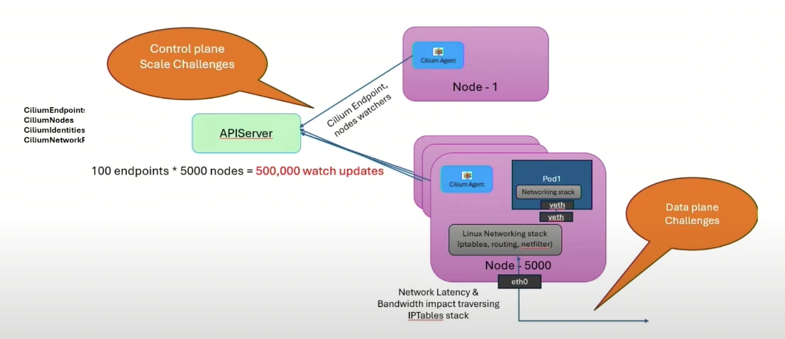
- Load on Kube-API Server / Etcd by each Cilium-agentac
- Pod Network Provision SLA
- Per-Node CPU/Memory Impact by Cilium-Agent daemonsets
- Cilium Endpoint Slices (CES) beta! - Docs
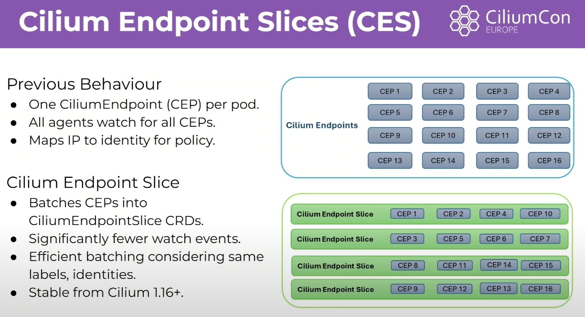
- 사전 조건
- Make sure that CEPs are enabled (the
-disable-endpoint-crdflag is not set totrue)
- Make sure you are not relying on the Egress Gateway which is not compatible with CES (see Egress Gateway Incompatibility with other features)
- Make sure that CEPs are enabled (the
- 설정
# CiliumEndpoint (CEP) per pod : All agents watch for all CEPs, Maps IP to Identity for policy. kubectl get ciliumendpoints.cilium.io -A kubectl get ciliumendpoints.cilium.io -A | wc -l kubectl get crd # helm upgrade cilium cilium/cilium --version 1.18.1 --namespace kube-system --reuse-values \ --set ciliumEndpointSlice.enabled=true kubectl rollout restart -n kube-system deployment cilium-operator kubectl rollout restart -n kube-system ds/cilium # Bactches CEPs into CiliumEndpointSlice CRDs : Significantly fewer watch events. kubectl get crd kubectl get ciliumendpointslices.cilium.io -A | wc -l kubectl get ciliumendpointslices.cilium.io -A NAME AGE ces-g7lwptqjy-m78ty 40s ces-mx8x5cv89-7nzrg 40s ces-r2l9hwd46-4hq92 40s
- CES 동작 : cilium-operator 에 ces-controller
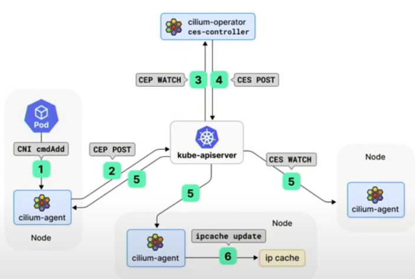
- 적용 후 효과 : 1000개 노드 등 - APIServer latency 87% 감소
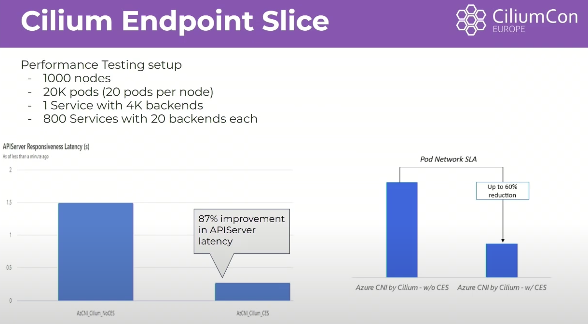
- K8S Cilium 기본 환경 : 5000개 노드 x 100개 엔드포인트 = 500,000 Watch Update
eBPF Host Routing , Netkit - Youtube , Youtube2
- Basic container netwokring
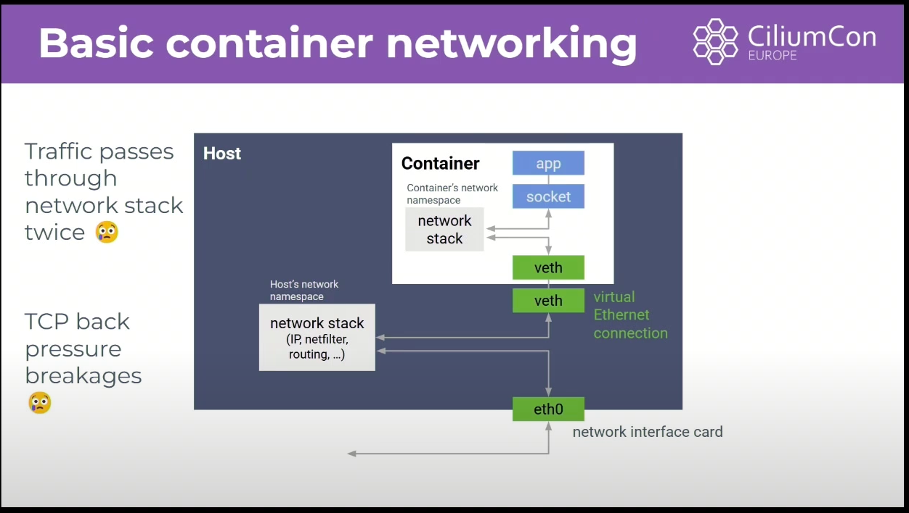
- eBPF Host Routing : bpf_redirect_peer 함수를 통해 호스트 NET NS 도착 시 → 바로 파드의 NET NS 로 전달.
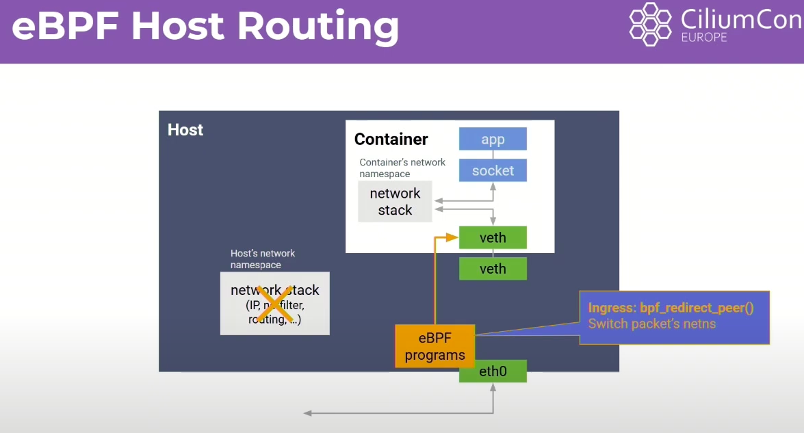
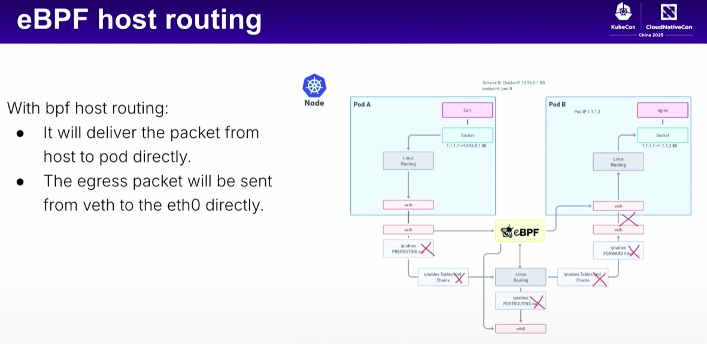
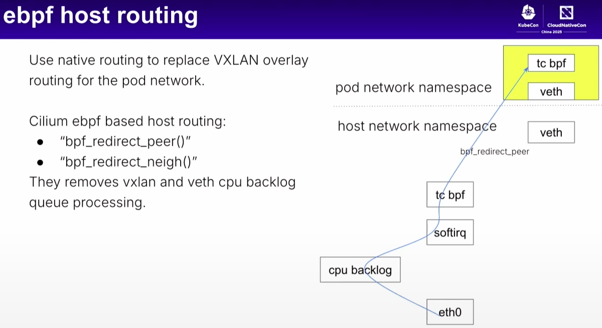
- 하지만 Egress 는 호스트 네트워크 스택(per-CPU backlog queue)을 통과해야한다..
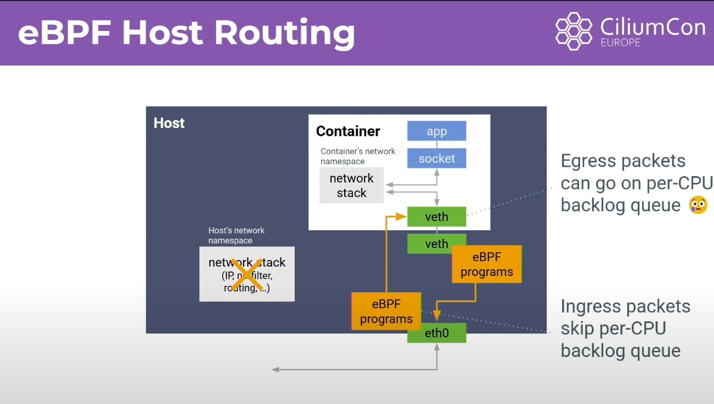
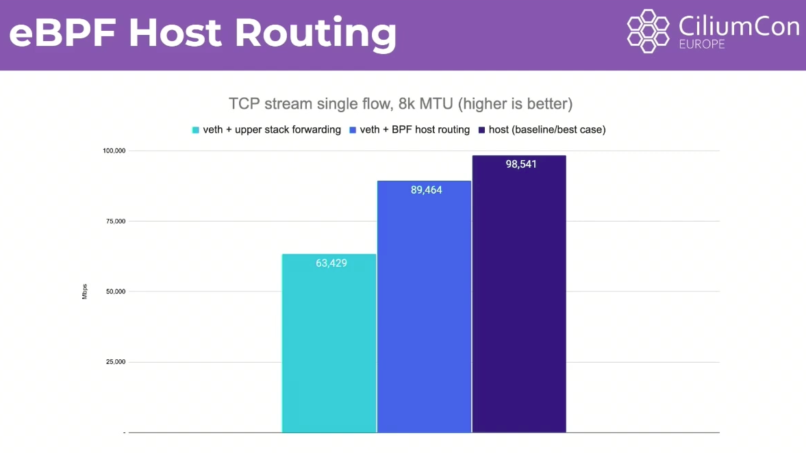
기존 파드 네트워크 vs veth + BPF host routing vs host (base) # kubectl exec -it -n kube-system ds/cilium -- cilium status | grep Routing KubeProxyReplacement: True [eth0 172.18.0.2 fc00:f853:ccd:e793::2 fe80::42:acff:fe12:2 (Direct Routing)] Routing: Network: Native Host: BPF
- Netkit devices : veth 와 유사(쌍), ingress + egress 큐(CPU) 대기 없이 모두 빠르게 전달 가능.
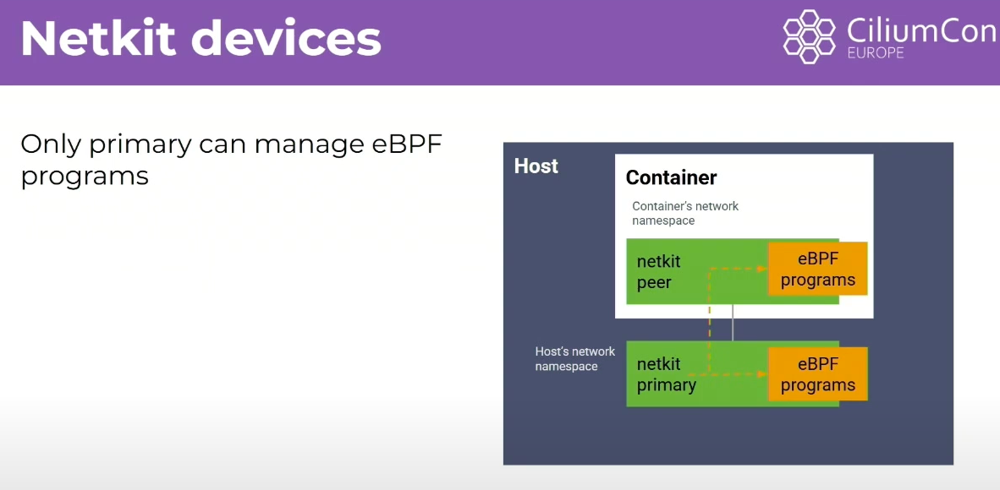
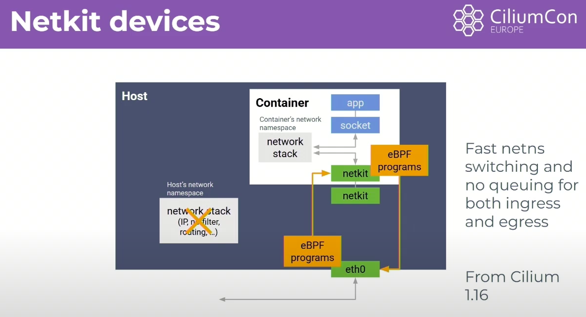
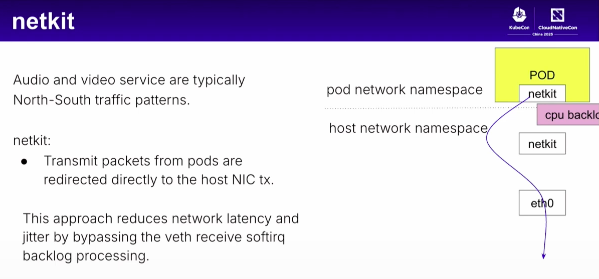
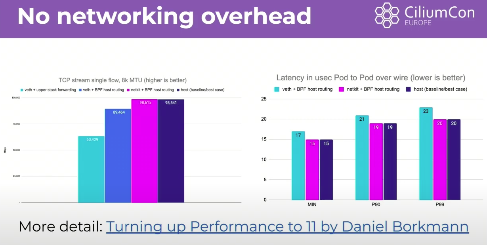
netkit + host Routing 경우 host(base) 와 거의 동등한 성능 → 컨테이너 NW 오버헤드 제거되라고 볼 수 있음.
- netkit 설정 시도 : 커널 6.8 이상 , eBPF host-routing
# docker exec -it myk8s-control-plane uname -r 6.10.14-linuxkit # helm upgrade cilium cilium/cilium --version 1.18.1 --namespace kube-system --reuse-values \ --set bpf.datapathMode=netkit kubectl rollout restart -n kube-system deployment cilium-operator kubectl rollout restart -n kube-system ds/cilium # 현재 나의 pc는 netkit을 지원하지 않아 사용이 불가능... kubectl logs -n kube-system cilium-k84hl time=2025-08-30T14:15:52.640082214Z level=fatal source=/go/src/github.com/cilium/cilium/pkg/logging/slog.go:159 msg="netkit devices need kernel 6.7.0 or newer and CONFIG_NETKIT" # helm upgrade cilium cilium/cilium --version 1.18.1 --namespace kube-system --reuse-values \ --set bpf.datapathMode=veth kubectl rollout restart -n kube-system deployment cilium-operator kubectl rollout restart -n kube-system ds/cilium kubectl exec -it -n kube-system ds/cilium -- cilium status | grep 'Device Mode' Device Mode: veth
- Basic container netwokring
2023eBPF XDP-based Acceleration Service Load-Balancer - Youtube- XDP & TC Layer 에서 LB 처리 시 : L4 LB XDP vs IPVS 비교
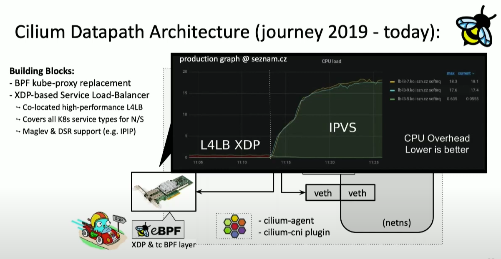
- XDP 설정 확인 : HW 지원 필요.
# docker exec -it myk8s-control-plane apt install bpftool -y docker exec -it myk8s-control-plane bpftool net docker exec -it myk8s-control-plane bpftool link # 설정 시 아래 항목에 활성화 kubectl exec -it -n kube-system ds/cilium -- cilium status --verbose | grep -i xdp XDP Acceleration: Disabled
- XDP & TC Layer 에서 LB 처리 시 : L4 LB XDP vs IPVS 비교
2023BIG TCP (IPv6 IPv4) - Youtube , Isovalent , Blog , OnlineLab
- 배경 : 100Gbps 이상 환경
- Cilium을 도입한 많은 조직(클라우드 공급업체, 금융 기관, 통신 공급업체)은 모두 공통점이 있습니다. 이들은 모두 네트워크에서 최대한 많은 성능을 끌어내고자 하며 끊임없이 미미한 성능 향상을 모색합니다.
- 이러한 조직들은 100Gbps 이상의 네트워크를 구축하고 있지만, 100Gbps 네트워크 어댑터를 도입하면서 피할 수 없는 과제가 발생합니다. 바로 CPU가 초당 800만 개의 패킷(MTU가 1,538바이트라고 가정할 때)을 어떻게 처리할 수 있느냐는 것입니다. 따라서 시스템이 패킷당 처리할 수 있는 시간은 120나노초밖에 남지 않아 비현실적입니다. 또한 인터페이스에서 상위 프로토콜 계층까지 이 모든 패킷을 처리하는 데 상당한 오버헤드가 발생합니다.
- 분명히 이 제한은 새로운 것이 아니며 패킷을 일괄 처리하여 해결되었습니다. Linux 스택에서는 GRO 를 통해 해결됩니다.(일반 수신 오프로드) 및 TSO(Transmit Segmentation Offload, 전송 분할 오프로드). 수신 측에서는 GRO가 패킷을 스택 내에서 64KB 크기의 초대형 패킷으로 그룹화하여 네트워킹 스택으로 전달합니다. 마찬가지로, 송신 측에서는 TSO가 NIC가 처리할 수 있도록 TCP 초대형 패킷을 분할합니다.

- 초대형 64K 패킷이 도움이 되기는 하지만, 최신 CPU는 실제로 훨씬 더 큰 패킷을 처리할 수 있습니다.
- 하지만 64K는 여전히 엄격한 제한으로 남아 있었습니다. IP 패킷의 길이는 16비트 필드에 옥텟 단위로 지정됩니다. 따라서 최대값은 65,535바이트(64KB)입니다.

- 더 큰 패킷 크기를 지정할 수 있는 더 큰 헤더를 찾을 수 있다면 어떨까요? 패킷 크기가 커지면 오버헤드가 줄어들고 이론적으로 처리량이 향상되며 지연 시간도 단축됩니다.
- IPv6 를 통한 BIG TCP
- 이것이 바로 BIG TCP가 설계된 목적입니다. Google의 Linux 커널 전문가 Eric Dumazet과 Coco Li가 개발한 BIG TCP는 Linux 5.19 커널에 도입되었습니다.
- 특이하게도 BIG TCP 지원은 IPv4 보다 먼저 IPv6에 도입되었습니다 . 22년 된 RFC( RFC2675) 를 통해 IPv6에 도입하는 것이 더 쉬웠습니다.) IPv6 점보그램(64KB보다 큰 패킷)을 설명합니다.
- IPv6는 패킷에 삽입할 수 있는 홉 바이 홉 헤더를 지원합니다. 홉 바이 홉 확장 헤더에 페이로드 길이를 지정하고 (무시하려면 IPv6 헤더의 페이로드 길이 필드를 0으로 설정) 64K 제한을 해결할 수 있습니다.

- Hop-by-Hop 확장 헤더는 페이로드 길이에 32비트 필드를 사용하는데, 이를 통해 최대 4GB 패킷을 사용할 수 있지만, 처음에는 제한이 64KB에서 512KB로 증가합니다.

- 교통 비유를 다시 말씀드리겠습니다. 단일 차량(표준 TCP/IP)에서 버스(GSO/GRO)로, 그리고 고속 열차(BIG TCP)로 옮겨갔습니다.
- IPv6를 통한 BIG TCP 지원은 Cilium 1.13에서 도입되었습니다.
- IPv4 BIG TCP
- IPv4에 대한 BIG TCP 지원은 Linux 커널 6.3에서 도입되었습니다. 자세한 내용은 Linux 커널 메일링 리스트 에서 확인할 수 있습니다.
- 하지만 간단히 말해서 IPv4에는 Hop-by-hop 확장 헤더가 없으므로,
skb->lenLinux 개발자가 참조하는 소켓 버퍼에 저장된 데이터 페이로드의 길이를 사용하여 더 큰 패킷 크기를 지정합니다.
- IPv4를 통한 BIG TCP는 Cilium 1.14 에 도입되었습니다.
- 점보 프레임 vs BIG TCP
- 이 블로그 게시물을 700단어나 읽었는데요, 왜 아직도 MTU(최대 전송 단위)에 대해 언급하지 않았는지 궁금하실 겁니다. 또한 다음과 같은 질문도 하실 수 있습니다. 1) BIG TCP와 점보 프레임은 같은 것인가요? 2) BIG TCP를 지원하기 위해 모든 네트워크 장치의 MTU를 변경해야 할까요?
- 점보 프레임은 이더넷 프레임 크기를 6배 증가시켜(표준 1,500바이트에서 무려 9,000바이트로) BIG TCP와 마찬가지로 성능을 크게 향상시킵니다. OSI 계층의 2계층에 위치하므로 IPv4와 IPv6 모두에 적용됩니다. 하지만 가장 큰 차이점은 점보 프레임은 물리적 네트워크를 통과하며, 이더넷 장비가 점보 프레임을 지원해야 하고, 프레임이 통과하는 모든 네트워크 인터페이스도 이에 맞게 구성되어야 한다는 것입니다.
- BIG TCP는 네트워크 장치의 MTU를 수정할 필요가 없습니다. 이는 Linux 네트워킹 스택 내에서 작동하도록 설계 되었으며, GRO가 수신 시 패킷을 64KB의 초대형 패킷 대신 512KB의 초대형 패킷으로 집계하고, GSO가 송신 시 초대형 패킷을 생성하여 스택 아래로 푸시하는 데 사용됩니다.
- 아직도 MTU 불일치 문제를 해결해야 한다는 악몽에 시달리는 전직 네트워크 엔지니어로서, 처음 이해했던 것과 달리 BIG TCP는 물리적 네트워크를 변경할 필요가 없다는 사실을 알게 되어 위안이 되었습니다.
- IPv6 BIG TCP 실습 따라해보자 : 지원되는 NIC(mlx4, mlx5) - Docs

TPS 42% 증가 
Pod 간 지연 2.2배 감소
- 설정 시도 : NIC 지원 필요.
# TSO 확인 : 작동 위치 - 송신(TX), NIC ## TCP 레이어에서 큰 세그먼트를 보내면 NIC가 직접 분할 ## CPU는 분할 부담을 덜고, NIC가 MTU에 맞게 처리 ## NIC가 TSO를 지원해야 작동 ethtool -k eth1 | grep tcp-segmentation-offload tcp-segmentation-offload: on # GRO 확인 : 작동 위치 - 수신(RX), 커널 ## 수신 시점에 여러 패킷을 하나의 큰 버퍼로 병합 ## 커널에서 처리할 패킷 수를 줄여 CPU 부담 감소 ## NIC 드라이버가 GRO를 지원해야 작동 ethtool -k eth1 | grep generic-receive-offload generic-receive-offload: on # GSO 확인 : 작동 위치 - 송신(TX), 커널 => 요거 대신, TSO 쓰는 듯 ## 커널에서 큰 데이터 버퍼를 만들어 드라이버로 전달 ## 드라이버나 NIC가 나중에 실제 MTU 단위로 잘라냄 ## TSO가 없을 때 fallback 용도로 쓰임 ethtool -k eth1 | grep generic-segmentation-offload generic-segmentation-offload: on --- ip -details -c link show dev eth1 3: eth1: <BROADCAST,MULTICAST,UP,LOWER_UP> mtu 1500 qdisc fq_codel state UP mode DEFAULT group default qlen 1000 link/ether 08:00:27:e3:b1:8c brd ff:ff:ff:ff:ff:ff promiscuity 0 allmulti 0 minmtu 46 maxmtu 16110 addrgenmode eui64 numtxqueues 1 numrxqueues 1 gso_max_size 65536 gso_max_segs 65535 tso_max_size 65536 tso_max_segs 65535 gro_max_size 65536 parentbus pci parentdev 0000:00:09.0 altname enp0s9 ip -details -c link show dev lxce1621569242f 27: lxce1621569242f@if26: <BROADCAST,MULTICAST,UP,LOWER_UP> mtu 1500 qdisc noqueue state UP mode DEFAULT group default qlen 1000 link/ether 42:39:b8:e8:e6:29 brd ff:ff:ff:ff:ff:ff link-netns cni-0f05c6f5-9bb2-8915-90b3-456648686924 promiscuity 0 allmulti 0 minmtu 68 maxmtu 65535 veth addrgenmode eui64 numtxqueues 4 numrxqueues 4 gso_max_size 65536 gso_max_segs 65535 tso_max_size 524280 tso_max_segs 65535 gro_max_size 65536 ip -details -c addr show dev eth1 3: eth1: <BROADCAST,MULTICAST,UP,LOWER_UP> mtu 1500 qdisc fq_codel state UP group default qlen 1000 link/ether 08:00:27:e3:b1:8c brd ff:ff:ff:ff:ff:ff promiscuity 0 allmulti 0 minmtu 46 maxmtu 16110 numtxqueues 1 numrxqueues 1 gso_max_size 65536 gso_max_segs 65535 tso_max_size 65536 tso_max_segs 65535 gro_max_size 65536 parentbus pci parentdev 0000:00:09.0 altname enp0s9 inet 192.168.10.100/24 brd 192.168.10.255 scope global eth1 valid_lft forever preferred_lft forever inet6 fe80::a00:27ff:fee3:b18c/64 scope link valid_lft forever preferred_lft forever ip -details -c addr show dev lxce1621569242f 27: lxce1621569242f@if26: <BROADCAST,MULTICAST,UP,LOWER_UP> mtu 1500 qdisc noqueue state UP group default qlen 1000 link/ether 42:39:b8:e8:e6:29 brd ff:ff:ff:ff:ff:ff link-netns cni-0f05c6f5-9bb2-8915-90b3-456648686924 promiscuity 0 allmulti 0 minmtu 68 maxmtu 65535 veth numtxqueues 4 numrxqueues 4 gso_max_size 65536 gso_max_segs 65535 tso_max_size 524280 tso_max_segs 65535 gro_max_size 65536 inet6 fe80::4039:b8ff:fee8:e629/64 scope link valid_lft forever preferred_lft forever --- # helm upgrade cilium cilium/cilium --version 1.18.0 --namespace kube-system --reuse-values \ --set enableIPv4BIGTCP=true kubectl -n kube-system rollout restart ds/cilium # IPv4 BIG TCP 옵션을 전환한 후 변경 사항을 적용하려면 Kubernetes Pods를 재시작해야 합니다! # 이미 배포된 파드들 모두 재시작! # kubectl exec -it -n kube-system ds/cilium -- cilium status | grep -i big IPv4 BIG TCP: Enabled [65536] IPv6 BIG TCP: Disabled --- # ip -details -c link show dev eth1 3: eth1: <BROADCAST,MULTICAST,UP,LOWER_UP> mtu 1500 qdisc fq_codel state UP mode DEFAULT group default qlen 1000 link/ether 08:00:27:e3:b1:8c brd ff:ff:ff:ff:ff:ff promiscuity 0 allmulti 0 minmtu 46 maxmtu 16110 addrgenmode eui64 numtxqueues 1 numrxqueues 1 gso_max_size 65536 gso_max_segs 65535 tso_max_size 65536 tso_max_segs 65535 gro_max_size 65536 parentbus pci parentdev 0000:00:09.0 altname enp0s9 ip -details -c link show dev lxce1621569242f 27: lxce1621569242f@if26: <BROADCAST,MULTICAST,UP,LOWER_UP> mtu 1500 qdisc noqueue state UP mode DEFAULT group default qlen 1000 link/ether 42:39:b8:e8:e6:29 brd ff:ff:ff:ff:ff:ff link-netns cni-0f05c6f5-9bb2-8915-90b3-456648686924 promiscuity 0 allmulti 0 minmtu 68 maxmtu 65535 veth addrgenmode eui64 numtxqueues 4 numrxqueues 4 gso_max_size 65536 gso_max_segs 65535 tso_max_size 524280 tso_max_segs 65535 gro_max_size 65536 ip -details -c addr show dev eth1 3: eth1: <BROADCAST,MULTICAST,UP,LOWER_UP> mtu 1500 qdisc fq_codel state UP group default qlen 1000 link/ether 08:00:27:e3:b1:8c brd ff:ff:ff:ff:ff:ff promiscuity 0 allmulti 0 minmtu 46 maxmtu 16110 numtxqueues 1 numrxqueues 1 gso_max_size 65536 gso_max_segs 65535 tso_max_size 65536 tso_max_segs 65535 gro_max_size 65536 parentbus pci parentdev 0000:00:09.0 altname enp0s9 inet 192.168.10.100/24 brd 192.168.10.255 scope global eth1 valid_lft forever preferred_lft forever inet6 fe80::a00:27ff:fee3:b18c/64 scope link valid_lft forever preferred_lft forever ip -details -c addr show dev lxce1621569242f 27: lxce1621569242f@if26: <BROADCAST,MULTICAST,UP,LOWER_UP> mtu 1500 qdisc noqueue state UP group default qlen 1000 link/ether 42:39:b8:e8:e6:29 brd ff:ff:ff:ff:ff:ff link-netns cni-0f05c6f5-9bb2-8915-90b3-456648686924 promiscuity 0 allmulti 0 minmtu 68 maxmtu 65535 veth numtxqueues 4 numrxqueues 4 gso_max_size 65536 gso_max_segs 65535 tso_max_size 524280 tso_max_segs 65535 gro_max_size 65536 inet6 fe80::4039:b8ff:fee8:e629/64 scope link valid_lft forever preferred_lft forever # docker exec -it myk8s-control-plane ip -d -j link show dev eth0 [{"ifindex":35,"link_index":36,"ifname":"eth0","flags":["BROADCAST","MULTICAST","UP","LOWER_UP"],"mtu":65535,"qdisc":"noqueue","operstate":"UP","linkmode":"DEFAULT","group":"default","link_type":"ether","address":"02:42:ac:12:00:02","broadcast":"ff:ff:ff:ff:ff:ff","link_netnsid":0,"promiscuity":0,"allmulti":0,"min_mtu":68,"max_mtu":65535,"linkinfo":{"info_kind":"veth"},"inet6_addr_gen_mode":"eui64","num_tx_queues":8,"num_rx_queues":8,"gso_max_size":65536,"gso_max_segs":65535,"tso_max_size":524280,"tso_max_segs":65535,"gro_max_size":65536}] # docker exec -it myk8s-control-plane ip -d -j link show dev eth0 | jq -c '.[0].gso_max_size' 65536 # ethtool -k eth1
- 배경 : 100Gbps 이상 환경
- Bandwidth Manager (optional, for BBR congestion control) : 정리 추가 예정
- eBPF clock probe to use jiffies for CT map : 정리 추가 예정
도전과제7AWS EC2 상위 Spec EC2 등 NIC 에서 지원 가능한 환경에서 Cilium Tuning 설정 직접 적용해보고 성능 비교해보기
도전과제8Cilium 공식문서에 Scalability report 의 테스트(200 노드) 따라해보기 - Docs
- Coroot
Coroot 소개 : - Github , Architecture

- Coroot-node-agent
- Coroot-node-agent는 eBPF로 구동되는 오픈 소스 관측 가능성 에이전트입니다.
- 이 에이전트는 노드에서 실행되는 모든 컨테이너에서 메트릭, 로그, 추적 및 프로필을 수집합니다.
- 에이전트는 메트릭에 대한 pull 모드와 push 모드를 모두 지원합니다.
- 이 에이전트는 Prometheus 형식으로 메트릭을 노출하고 Prometheus Remote Write protocol을 사용하여 직접 Coroot로 메트릭을 전송할 수도 있습니다.
- 로그와 추적은 OpenTelemetry 프로토콜을 통해 Coroot로 전송되며, 프로필은 custom HTTP 기반 프로토콜을 사용하여 전송됩니다.
- 전체 커버리지를 보장하려면 클러스터의 모든 노드에 에이전트를 설치해야 합니다.
- 쿠버네티스를 사용하는 경우 데몬셋으로 배포되므로 각 노드에 자동으로 추가됩니다.
- Coroot-cluster-agent
- Coroot-cluster-agent는 클러스터 전반의 원격 측정 데이터를 수집하는 전용 도구입니다:
- Coroot's Service Map을 통해 데이터베이스를 검색하여 데이터베이스 메트릭을 수집합니다.
- 에이전트는 Coroot에서 제공하는 자격 증명을 사용하여 Postgres, MySQL, Redis, Memcached, MongoDB와 같은 식별된 데이터베이스에 연결하고 데이터베이스별 메트릭을 수집한 다음 Prometheus Remote Write protocol을 사용하여 Coroot에 전송합니다.
- coroot-node-agent에 내장된 eBPF 기반 continuous profiler 외에도, Coroot는 애플리케이션 수준의 프로파일링도 지원합니다.
- cluster-agent는 coroot.com/profile-scrape 과 coroot.com/profile-port, 로 주석이 달린 Go 애플리케이션을 발견하고 인스턴스에서 CPU 및 메모리 프로파일을 수집할 수 있습니다.
- OpenTelemetry
- Prometheus :
- ClickHouse :
- Coroot-node-agent
Coroot Community Edition 설치 - Docs , Requirements
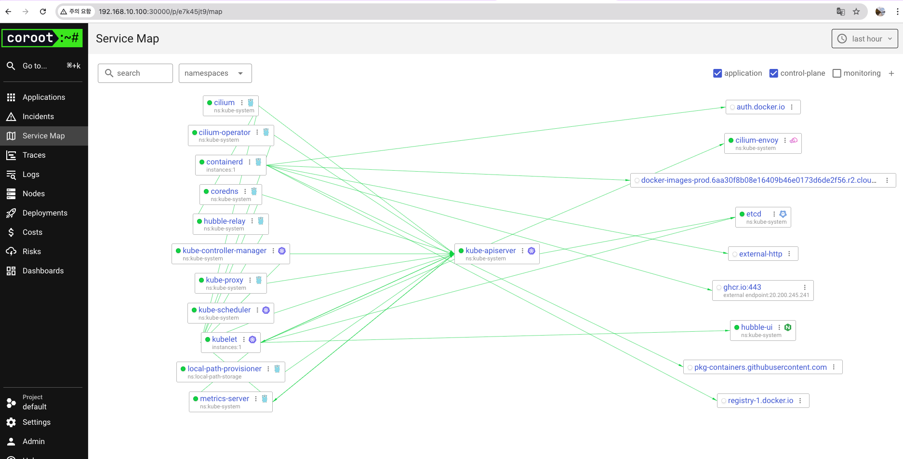
# helm repo add coroot https://coroot.github.io/helm-charts helm repo update coroot # Install the Coroot Operator: helm install -n coroot --create-namespace coroot-operator coroot/coroot-operator # Install the Coroot Community Edition. This chart creates a minimal Coroot Custom Resource: helm install -n coroot coroot coroot/coroot-ce \ --set "clickhouse.shards=1,clickhouse.replicas=1,clickhouse.storage.size=20Gi" # http://localhost:30001 접속 kubectl patch svc -n coroot coroot-coroot -p '{"spec": {"type": "NodePort", "ports": [{"port": 8080, "targetPort": 8080, "nodePort": 30001}]}}' open http://localhost:30001 # http://localhost:30000 접속 kubectl patch svc -n coroot coroot-prometheus -p '{"spec": {"type": "NodePort", "ports": [{"port": 9090, "targetPort": 9090, "nodePort": 30002}]}}' open http://localhost:30002 # 아래 그림 처럼 API Key 확인 후 helm 업그레이드 helm upgrade --install -n coroot coroot coroot/coroot-ce --reuse-values \ --set "apiKey=R71dsNaSvXRfv02b90lll_FKyJQhv6ag"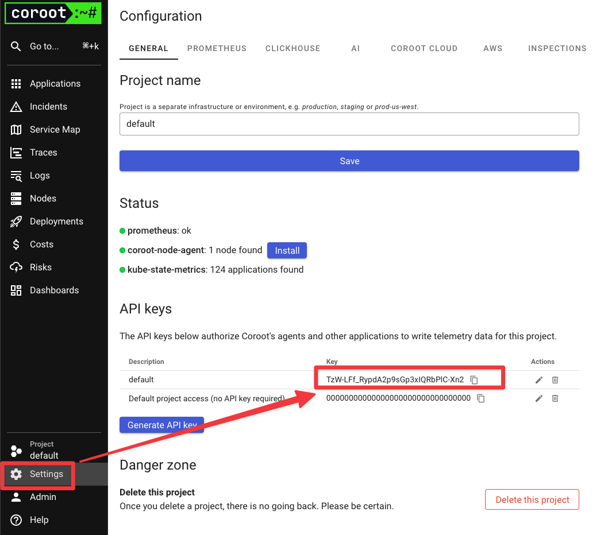
- kubeshark
설치 - Docs
# mac brew install kubeshark # 확인 kubeshark version v52.8.1 kubeshark -h Available Commands: clean Removes all Kubeshark resources completion Generate the autocompletion script for the specified shell config Generate Kubeshark config with default values console Stream the scripting console logs into shell help Help about any command license Print the license loaded string logs Create a ZIP file with logs for GitHub issues or troubleshooting pcapdump Store all captured traffic (including decrypted TLS) in a PCAP file. pprof Select a Kubeshark container and open the pprof web UI in the browser proxy Open the web UI (front-end) in the browser via proxy/port-forward scripts Watch the `scripting.source` and/or `scripting.sources` folders for changes and update the scripts tap Capture the network traffic in your Kubernetes cluster version Print version info # Capture the network traffic in your Kubernetes cluster kubeshark tap 2025-08-27T23:25:47+09:00 INF tapRunner.go:47 > Using Docker: registry=docker.io/kubeshark tag= 2025-08-27T23:25:47+09:00 INF tapRunner.go:51 > Kubeshark will store the traffic up to a limit (per node). Oldest TCP/UDP streams will be removed once the limit is reached. limit=5Gi 2025-08-27T23:25:47+09:00 INF versionCheck.go:23 > Checking for a newer version... 2025-08-27T23:25:47+09:00 INF common.go:69 > Using kubeconfig: path=/Users/gasida/.kube/config 2025-08-27T23:25:48+09:00 INF tapRunner.go:67 > Telemetry enabled=true notice="Telemetry can be disabled by setting the flag: --telemetry-enabled=false" 2025-08-27T23:25:48+09:00 INF tapRunner.go:69 > Targeting pods in: namespaces=["cilium-secrets","default","kube-node-lease","kube-public","kube-system","local-path-storage","monitoring"] 2025-08-27T23:25:48+09:00 INF tapRunner.go:136 > Targeted pod: cilium-envoy-xk459 2025-08-27T23:25:48+09:00 INF tapRunner.go:136 > Targeted pod: cilium-operator-74c8d8bb68-5r657 2025-08-27T23:25:48+09:00 INF tapRunner.go:136 > Targeted pod: cilium-t2mgt 2025-08-27T23:25:48+09:00 INF tapRunner.go:136 > Targeted pod: coredns-674b8bbfcf-4l4sr 2025-08-27T23:25:48+09:00 INF tapRunner.go:136 > Targeted pod: coredns-674b8bbfcf-877hc 2025-08-27T23:25:48+09:00 INF tapRunner.go:136 > Targeted pod: etcd-myk8s-control-plane 2025-08-27T23:25:48+09:00 INF tapRunner.go:136 > Targeted pod: hubble-relay-fdd49b976-xjzpn 2025-08-27T23:25:48+09:00 INF tapRunner.go:136 > Targeted pod: hubble-ui-655f947f96-mc2tf 2025-08-27T23:25:48+09:00 INF tapRunner.go:136 > Targeted pod: kube-apiserver-myk8s-control-plane 2025-08-27T23:25:48+09:00 INF tapRunner.go:136 > Targeted pod: kube-controller-manager-myk8s-control-plane 2025-08-27T23:25:48+09:00 INF tapRunner.go:136 > Targeted pod: kube-ops-view-6658c477d4-dcnzp 2025-08-27T23:25:48+09:00 INF tapRunner.go:136 > Targeted pod: kube-scheduler-myk8s-control-plane 2025-08-27T23:25:48+09:00 INF tapRunner.go:136 > Targeted pod: local-path-provisioner-7dc846544d-jhv4n 2025-08-27T23:25:48+09:00 INF tapRunner.go:136 > Targeted pod: kube-prometheus-stack-grafana-0 2025-08-27T23:25:48+09:00 INF tapRunner.go:136 > Targeted pod: kube-prometheus-stack-kube-state-metrics-85f6b56f69-h4pj7 2025-08-27T23:25:48+09:00 INF tapRunner.go:136 > Targeted pod: kube-prometheus-stack-operator-9cbf49c6c-96qs8 2025-08-27T23:25:48+09:00 INF tapRunner.go:136 > Targeted pod: kube-prometheus-stack-prometheus-node-exporter-7m527 2025-08-27T23:25:48+09:00 INF tapRunner.go:136 > Targeted pod: prometheus-kube-prometheus-stack-prometheus-0 2025-08-27T23:25:48+09:00 INF tapRunner.go:79 > Waiting for the creation of Kubeshark resources... 2025-08-27T23:25:52+09:00 INF helm.go:128 > Downloading Helm chart: repo-path=/Users/gasida/Library/Caches/helm/repository url=https://github.com/kubeshark/kubeshark.github.io/releases/download/kubeshark-52.8.1/kubeshark-52.8.1.tgz 2025-08-27T23:25:54+09:00 INF helm.go:147 > Installing using Helm: kube-version=">= 1.16.0-0" release=kubeshark source=["https://github.com/kubeshark/kubeshark/tree/master/helm-chart"] version=52.8.1 2025-08-27T23:25:55+09:00 INF helm.go:61 > creating 21 resource(s) 2025-08-27T23:25:55+09:00 INF tapRunner.go:96 > Installed the Helm release: kubeshark 2025-08-27T23:25:55+09:00 INF tapRunner.go:167 > Added: pod=kubeshark-hub 2025-08-27T23:25:55+09:00 INF tapRunner.go:258 > Added: pod=kubeshark-front 2025-08-27T23:26:20+09:00 INF tapRunner.go:192 > Ready. pod=kubeshark-hub 2025-08-27T23:26:31+09:00 INF tapRunner.go:282 > Ready. pod=kubeshark-front 2025-08-27T23:26:31+09:00 INF proxy.go:31 > Starting proxy... namespace=default proxy-host=127.0.0.1 service=kubeshark-front src-port=8899 2025-08-27T23:26:36+09:00 INF tapRunner.go:417 > Kubeshark is available at: url=http://127.0.0.1:8899 2025-08-27T23:26:36+09:00 INF console.go:45 > Starting scripting console ... E0827 23:26:38.191099 26740 proxy_server.go:147] Error while proxying request: error dialing backend: context canceled 2025-08-27T23:26:41+09:00 INF console.go:61 > Connecting to: host=127.0.0.1 url=http://127.0.0.1:8899/api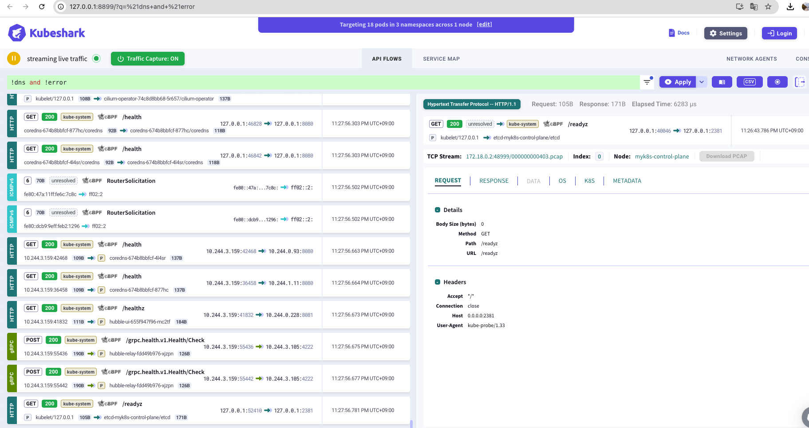
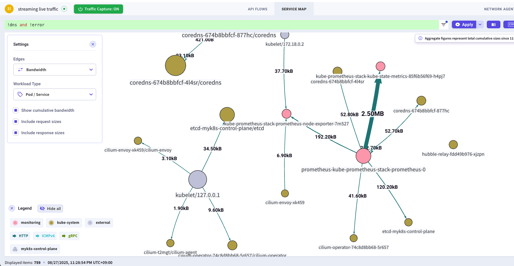
- (옵션) 폐쇄망 Air-Gapped 환경 : Enterprise Tier(Plan)에서만 가능 - Docs
# Make sure to disable internet connectivity: internetConnectivity: false
- (참고) 삭제 시
# cleanup kubeshark clean
- (옵션) 폐쇄망 Air-Gapped 환경 : Enterprise Tier(Plan)에서만 가능 - Docs


{kind=link}
{kind=link}
{kind=link}
{kind=link}
{kind=link}
{kind=link}
{kind=link}
{kind=link}
{kind=link}
{kind=link}
{kind=link}
{kind=link}
{kind=link}
{kind=link}
{kind=link}
{kind=link}
{kind=link}
{kind=link}
{kind=link}
{kind=link}
{kind=link}
{kind=link}
{kind=link}
{kind=link}
{kind=link}
{kind=link}
{kind=link}
{kind=link}
{kind=link}
{kind=link}
{kind=link}
{kind=link}
{kind=link}
{kind=link}
{kind=link}
{kind=link}
{kind=link}
{kind=link}
{kind=link}
{kind=link}
{kind=link}
{kind=link}
{kind=link}
{kind=link}
{kind=link}
{kind=link}